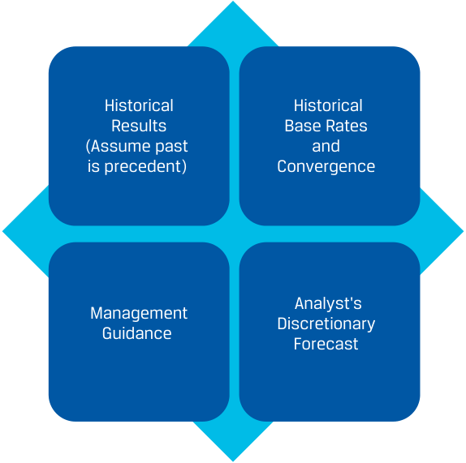

Learning Module 7 Company Analysis: Forecasting - Part 1: Introduction
Volume 5: Equity Investments
Learning Module 7 Company Analysis: Forecasting
Part 1/5: Introduction (PDF Pages 295–310)
Tập 5: Đầu tư Cổ phần (Volume 5: Equity Investments)
Học phần 7: Phân tích Công ty: Dự báo (Learning Module 7: Company Analysis: Forecasting)
Phần 1/5: Giới thiệu (Trang PDF 295–310)
L E A R N I N G M O D U L E
H Ọ C P H Ầ N
7
7
Company Analysis: Forecasting
Phân tích Công ty: Dự báo (Company Analysis: Forecasting)
LEARNING OUTCOMES
KẾT QUẢ HỌC TẬP (LEARNING OUTCOMES)
| Mastery | The candidate should be able to: |
|---|---|
| explain principles and approaches to forecasting a company’s financial results and position |
|
| explain approaches to forecasting a company’s revenues | |
| explain approaches to forecasting a company’s operating expenses and working capital |
|
| explain approaches to forecasting a company’s capital investments and capital structure |
|
| describe the use of scenario analysis in forecasting |
| Mức độ thành thạo | Ứng viên cần có khả năng: |
|---|---|
| giải thích các nguyên tắc và phương pháp tiếp cận để dự báo kết quả và tình hình tài chính của một công ty | |
| giải thích các phương pháp tiếp cận để dự báo doanh thu (revenues) của một công ty | |
| giải thích các phương pháp tiếp cận để dự báo chi phí hoạt động (operating expenses) và vốn lưu động (working capital) của một công ty | |
| giải thích các phương pháp tiếp cận để dự báo đầu tư vốn (capital investments) và cấu trúc vốn (capital structure) của một công ty | |
| mô tả việc sử dụng phân tích kịch bản (scenario analysis) trong dự báo |
INTRODUCTION
GIỚI THIỆU (INTRODUCTION)
1
1
Forecasts of companies’ financial statements are used by analysts in valuation and to make investment recommendations. Developing the forecasts or projections is an important aspect of an analyst’s job and is the focus of this module. In the first lesson, what to forecast, approaches to forecasting, and selecting a forecast horizon are discussed. The next three lessons focus on particular forecasts: revenues, operating expenses and working capital, and capital investments and capital structure. The final lesson discusses the use of scenario analysis in considering multiple outcomes.
Các dự báo về báo cáo tài chính của công ty được các nhà phân tích sử dụng trong định giá và đưa ra các khuyến nghị đầu tư. Việc xây dựng các dự báo (forecasts) hoặc phóng chiếu (projections) là một khía cạnh quan trọng trong công việc của nhà phân tích và là trọng tâm của học phần này. Trong bài học đầu tiên, chúng ta thảo luận về đối tượng cần dự báo, các phương pháp tiếp cận dự báo và việc lựa chọn tầm nhìn dự báo (forecast horizon). Ba bài học tiếp theo tập trung vào các dự báo cụ thể: doanh thu, chi phí hoạt động và vốn lưu động, cũng như đầu tư vốn và cấu trúc vốn. Bài học cuối cùng thảo luận về việc sử dụng phân tích kịch bản khi xem xét nhiều kết quả có thể xảy ra.
| LEAR ■ |
NING MODULE OVERVIEW Four common types of forecast objects are drivers of financial statement lines, individual financial statement lines, summary measures, and ad hoc objects. An analyst’s choice of forecast object depends on available information, efficiency, accuracy, explanatory value,and verifiability. |
|---|---|
| TỔNG QUAN HỌC PHẦN (LEARNING MODULE OVERVIEW) |
|---|
| ■ Bốn loại đối tượng dự báo (forecast objects) phổ biến là các động lực của các khoản mục trên báo cáo tài chính (drivers of financial statement lines), các khoản mục riêng lẻ trên báo cáo tài chính (individual financial statement lines), các thước đo tóm tắt (summary measures), và các đối tượng đột xuất/đặc thù (ad hoc objects). Sự lựa chọn đối tượng dự báo của nhà phân tích phụ thuộc vào thông tin sẵn có, tính hiệu quả (efficiency), độ chính xác (accuracy), giá trị giải thích (explanatory value), và khả năng kiểm chứng (verifiability). |
-
Forecast approaches generally are based on historical results, historical base rates and convergence, management guidance, or analyst discretion. An analyst’s choice of forecast approach depends on the company’s industry structure, sensitivity to the business cycle, and business model, as well as the reliability and availability of information.
-
The choice of the forecast time horizon is determined by the investment strategy for which the security is being considered, the cyclicality of the industry, company-specific factors, and the analyst’s employer’s preferences.
-
Revenue forecasts may be based on top-down or bottom-up forecast objects, using any of the four forecast approaches. Using different forecast objects and approaches to project revenue can be useful in uncovering implicit assumptions or errors in any single approach.
-
Top-down revenue drivers include growth relative to GDP growth, and market growth and market share. Bottom-up revenue drivers include volumes and average selling prices; revenue by product line, geographic area, or reporting segment; capacity-based measures; and return-based measures.
-
Analysts often use aggregated forecast objects or summary measures to forecast operating expenses because of a lack of disaggregated information. However, forecasts for operating expenses should be coherent with revenue forecasts. The choice of forecast object can vary depending on the forecast horizon.
-
Working capital forecasts typically use efficiency ratios combined with revenue and operating expense forecasts to project accounts receivable, inventory, accounts payable, and other current assets and liabilities.
-
Forecasts for capital expenditures may differentiate between maintenance and growth capital expenditures. Maintenance capital expenditure forecasts are often based on depreciation and amortization expenses. Growth capital expenditure forecasts are tied to a company’s strategy, expansion plans, and revenue growth.
-
Forecasts about a company’s capital structure consider historical leverage ratios and capital structure, the company’s financial strategy, and capital expenditure forecasts.
-
Based on a company’s risk factors, an analyst may develop several forecast scenarios rather than develop a single forecast. The analyst will judge the likelihood of each scenario occurring.
-
Các phương pháp tiếp cận dự báo (forecast approaches) nhìn chung dựa trên kết quả lịch sử (historical results), tỷ suất cơ sở lịch sử và sự hội tụ (historical base rates and convergence), định hướng của ban điều hành (management guidance), hoặc dự báo chủ quan của nhà phân tích (analyst discretion). Sự lựa chọn phương pháp dự báo của nhà phân tích phụ thuộc vào cấu trúc ngành của công ty, độ nhạy cảm với chu kỳ kinh doanh và mô hình kinh doanh, cũng như độ tin cậy và tính sẵn có của thông tin.
-
Việc lựa chọn kỳ hạn dự báo (forecast time horizon) được quyết định bởi chiến lược đầu tư mà chứng khoán đang được xem xét, tính chu kỳ của ngành, các yếu tố đặc thù của công ty, và ưu tiên của tổ chức tuyển dụng nhà phân tích.
-
Dự báo doanh thu có thể dựa trên các đối tượng dự báo từ trên xuống (top-down) hoặc từ dưới lên (bottom-up), sử dụng bất kỳ phương pháp nào trong bốn phương pháp dự báo. Việc sử dụng các đối tượng và phương pháp dự báo khác nhau để phóng chiếu doanh thu có thể hữu ích trong việc phát hiện ra các giả định ngầm (implicit assumptions) hoặc sai sót trong bất kỳ phương pháp đơn lẻ nào.
-
Các động lực doanh thu từ trên xuống (top-down revenue drivers) bao gồm tốc độ tăng trưởng tương quan với tăng trưởng GDP, và tăng trưởng thị trường cùng thị phần. Các động lực doanh thu từ dưới lên (bottom-up revenue drivers) bao gồm sản lượng và giá bán bình quân (average selling prices); doanh thu theo dòng sản phẩm, khu vực địa lý, hoặc phân khúc báo cáo; các thước đo dựa trên công suất (capacity-based measures); và các thước đo dựa trên tỷ suất sinh lợi (return-based measures).
-
Các nhà phân tích thường sử dụng các đối tượng dự báo tổng hợp hoặc các thước đo tóm tắt để dự báo chi phí hoạt động do thiếu thông tin bóc tách chi tiết. Tuy nhiên, các dự báo về chi phí hoạt động phải nhất quán mạch lạc (coherent) với các dự báo doanh thu. Sự lựa chọn đối tượng dự báo có thể khác nhau tùy thuộc vào tầm nhìn dự báo.
-
Các dự báo vốn lưu động thường sử dụng các tỷ số hiệu quả hoạt động (efficiency ratios) kết hợp với dự báo doanh thu và chi phí hoạt động để phóng chiếu các khoản phải thu khách hàng, hàng tồn kho, các khoản phải trả người bán, cùng các tài sản và nợ phải trả ngắn hạn khác.
-
Các dự báo về chi tiêu vốn (capital expenditures – CAPEX) có thể phân biệt giữa chi tiêu vốn duy trì (maintenance capital expenditures) và chi tiêu vốn tăng trưởng (growth capital expenditures). Dự báo chi tiêu vốn duy trì thường dựa trên chi phí khấu hao tài sản cố định và phân bổ tài sản vô hình (depreciation and amortization expenses). Dự báo chi tiêu vốn tăng trưởng gắn liền với chiến lược, kế hoạch mở rộng và tăng trưởng doanh thu của công ty.
-
Các dự báo về cấu trúc vốn của một công ty xem xét các tỷ số đòn bẩy lịch sử và cấu trúc vốn lịch sử, chiến lược tài chính của công ty, và các dự báo chi tiêu vốn.
-
Dựa trên các yếu tố rủi ro của công ty, nhà phân tích có thể xây dựng một số kịch bản dự báo (forecast scenarios) thay vì chỉ xây dựng một dự báo duy nhất. Nhà phân tích sẽ đánh giá khả năng xảy ra (likelihood) của từng kịch bản.
LEARNING MODULE SELF-ASSESSMENT
TỰ ĐÁNH GIÁ HỌC PHẦN (LEARNING MODULE SELF-ASSESSMENT)
These initial questions are intended to help you gauge your current level of understanding of this learning module.
Những câu hỏi ban đầu này nhằm giúp bạn tự đánh giá mức độ hiểu biết hiện tại của mình về học phần này.
- A benefit of using summary measures as forecast objects is most likely : A. efficiency.
- B. transparency.
- Lợi ích của việc sử dụng các thước đo tóm tắt (summary measures) làm đối tượng dự báo nhiều khả năng nhất là:
-
A. tính hiệu quả (efficiency).
-
B. tính minh bạch (transparency).
| C.explanatory value. Solution: |
|---|
| A is correct. The benefit of using summary measures as a forecast object is efficiency, as fewer variables need to be forecast, but a disadvantage is less transparency. Forecasting financial statement lines or their drivers has the benefit of improved explanatory value. |
| 2. Which of the following approaches is_most_appropriate for forecasting annu- al revenues for a company in a cyclical industry? A.Historical results |
| B.Management guidance C.Analyst’s discretionary forecast Solution: |
| C is correct. An analyst’s discretionary forecast is most appropriate, because it allows the analyst to consider both the current phase and the expected future phase of the business cycle. Historical results are a less appropriate forecast approach for companies in cyclical industries, because a future pe- riod is likely to be at a different point in the business cycle than the current or past period, and so results will differ. The use of guidance for companies that are highly sensitive to the business cycle is less appropriate, as manage- ment does_not_have an informational advantage over investors in forecasting macroeconomic variables like GDP or the prices of commodities. |
| 3. An example of a top-down driver for revenue is a company’s: A.market share. |
| B.sales growth rate. C.products’ average selling price. Solution: |
| A is correct. Top-down drivers of revenue include the company’s market share and the industry’s market growth. The company’s sales growth rate and products’ average selling price are bottom-up drivers of revenue. |
| 4. In developing a revenue forecast, non-recurring revenue_most likely_: |
| A.has the same drivers as recurring revenue. B.will be disclosed by a company’s management. C.is considered separately from recurring revenue. Solution: |
| C is correct. Non-recurring items and effects should be considered separate- ly. The non-recurring objects, such as changes in exchange rates or provi- sions for legal costs, generally do not have the same drivers as the recurring objects. While management may disclose some non-recurring items and effects, there are also non-recurring items and effects that management does not disclose, which require analyst judgment. |
| 5. An analyst should consider the effects of changing commodity prices when forecasting: |
| A.revenue only. |
| B.cost of sales only. |
| C. giá trị giải thích (explanatory value). Lời giải: |
|---|
| A là đáp án đúng. Lợi ích của việc sử dụng các thước đo tóm tắt làm đối tượng dự báo là tính hiệu quả (tiết kiệm thời gian/công sức), vì cần dự báo ít biến số hơn, nhưng nhược điểm là kém minh bạch hơn. Việc dự báo các khoản mục trên báo cáo tài chính hoặc các động lực của chúng mang lại lợi ích là cải thiện giá trị giải thích. |
| 2. Phương pháp tiếp cận nào sau đây là phù hợp nhất để dự báo doanh thu hàng năm cho một công ty trong một ngành có tính chu kỳ (cyclical industry)? A. Kết quả lịch sử (Historical results) |
| B. Định hướng của ban điều hành (Management guidance) C. Dự báo chủ quan của nhà phân tích (Analyst’s discretionary forecast) Lời giải: |
| C là đáp án đúng. Dự báo chủ quan của nhà phân tích là phù hợp nhất, bởi vì nó cho phép nhà phân tích xem xét cả giai đoạn hiện tại và giai đoạn dự kiến trong tương lai của chu kỳ kinh doanh. Kết quả lịch sử là một phương pháp dự báo kém phù hợp hơn đối với các công ty trong các ngành có tính chu kỳ, bởi vì một giai đoạn trong tương lai nhiều khả năng sẽ nằm ở một điểm khác trong chu kỳ kinh doanh so với giai đoạn hiện tại hoặc quá khứ, và do đó kết quả sẽ khác biệt. Việc sử dụng định hướng của ban điều hành cho các công ty nhạy cảm cao với chu kỳ kinh doanh là kém phù hợp hơn, vì ban điều hành không có lợi thế thông tin hơn các nhà đầu tư trong việc dự báo các biến số kinh tế vĩ mô như GDP hay giá cả hàng hóa cơ bản (commodities). |
| 3. Một ví dụ về động lực từ trên xuống (top-down driver) đối với doanh thu là: A. thị phần của công ty (market share). |
| B. tốc độ tăng trưởng doanh thu của công ty. C. giá bán bình quân các sản phẩm của công ty. Lời giải: |
| A là đáp án đúng. Các động lực doanh thu từ trên xuống bao gồm thị phần của công ty và mức tăng trưởng thị trường của ngành. Tốc độ tăng trưởng doanh thu của công ty và giá bán bình quân sản phẩm là các động lực doanh thu từ dưới lên (bottom-up drivers). |
| 4. Khi xây dựng dự báo doanh thu, doanh thu không thường xuyên (non-recurring revenue) nhiều khả năng nhất: |
| A. có cùng các động lực như doanh thu định kỳ thường xuyên (recurring revenue). B. sẽ được công bố bởi ban điều hành của công ty. C. được xem xét tách biệt với doanh thu định kỳ thường xuyên. Lời giải: |
| C là đáp án đúng. Các khoản mục và hiệu ứng không thường xuyên cần được xem xét riêng biệt. Các đối tượng không thường xuyên, chẳng hạn như thay đổi tỷ giá hối đoái hoặc dự phòng chi phí pháp lý, nhìn chung không có cùng các động lực như các đối tượng định kỳ thường xuyên. Mặc dù ban điều hành có thể công bố một số khoản mục và hiệu ứng không thường xuyên, nhưng cũng có những khoản mục và hiệu ứng không thường xuyên mà ban điều hành không công bố, đòi hỏi sự phán đoán của nhà phân tích. |
| 5. Nhà phân tích cần xem xét tác động của sự thay đổi giá hàng hóa cơ bản (commodity prices) khi dự báo: |
| A. chỉ riêng doanh thu. |
| B. chỉ riêng giá vốn hàng bán (cost of sales). |
-
C. both revenue and cost of sales.
-
Solution:
-
C. cả doanh thu và giá vốn hàng bán.
-
Lời giải:
C is correct. Both a company’s cost of sales through input prices and its revenue may be affected by commodity prices. The effect on revenue depends on the company’s competitive positioning and the price elasticity of demand for the company’s products.
C là đáp án đúng. Cả giá vốn hàng bán của công ty (thông qua giá đầu vào) lẫn doanh thu của công ty đều có thể bị ảnh hưởng bởi giá hàng hóa cơ bản. Tác động lên doanh thu phụ thuộc vào vị thế cạnh tranh của công ty và độ co giãn của cầu theo giá (price elasticity of demand) đối với sản phẩm của công ty.
- Working capital forecasts for a mature company with a unique business model are most likely made by:
-
A. increasing the current assets and liabilities by the sales growth rate.
-
B. using the company’s efficiency ratios combined with sales and operating forecasts.
-
C. using a historical base rate and convergence approach to develop forecasts of revenue, operating expenses, and efficiency ratios.
-
Solution:
- Các dự báo vốn lưu động cho một công ty đã trưởng thành có mô hình kinh doanh độc nhất (unique business model) nhiều khả năng nhất được thực hiện bằng cách:
-
A. tăng tài sản và nợ phải trả ngắn hạn theo tốc độ tăng trưởng doanh thu.
-
B. sử dụng các tỷ số hiệu quả hoạt động (efficiency ratios) của công ty kết hợp với các dự báo doanh thu và chi phí hoạt động.
-
C. sử dụng phương pháp tỷ suất cơ sở lịch sử và sự hội tụ để xây dựng các dự báo về doanh thu, chi phí hoạt động và các tỷ số hiệu quả hoạt động.
-
Lời giải:
B is correct. For a company with a unique business model, using a historical results approach is appropriate. Working capital forecasts are typically made by using efficiency ratios, which are combined with sales and operating cost forecasts to project accounts receivable, inventories, accounts payable, and other current assets and liabilities. The historical base rate and convergence approach is appropriate if the company is converging toward the norm for the industry. Adjusting current assets and liabilities by the sales growth rate is not appropriate, because changes in sales will affect each item differently.
B là đáp án đúng. Đối với một công ty có mô hình kinh doanh độc nhất, việc sử dụng phương pháp kết quả lịch sử là phù hợp. Các dự báo vốn lưu động thường được thực hiện bằng cách sử dụng các tỷ số hiệu quả hoạt động, kết hợp với các dự báo doanh thu và chi phí hoạt động để phóng chiếu các khoản phải thu khách hàng, hàng tồn kho, các khoản phải trả người bán, cùng các tài sản và nợ phải trả ngắn hạn khác. Phương pháp tỷ suất cơ sở lịch sử và sự hội tụ sẽ phù hợp nếu công ty đang hội tụ về mức chuẩn của ngành. Việc điều chỉnh tài sản và nợ phải trả ngắn hạn theo tốc độ tăng trưởng doanh thu là không phù hợp, bởi vì những thay đổi về doanh thu sẽ tác động đến từng khoản mục một cách khác nhau.
- Depreciation and amortization expenses are often used as the basis for:
-
A. growth capital expenditures only.
-
B. maintenance capital expenditures only.
-
C. both growth and maintenance capital expenditures.
-
Solution:
- Chi phí khấu hao tài sản cố định và phân bổ tài sản vô hình (depreciation and amortization expenses) thường được sử dụng làm cơ sở cho:
-
A. chỉ riêng chi tiêu vốn tăng trưởng (growth capital expenditures).
-
B. chỉ riêng chi tiêu vốn duy trì (maintenance capital expenditures).
-
C. cả chi tiêu vốn tăng trưởng và chi tiêu vốn duy trì.
-
Lời giải:
B is correct. Maintenance capital expenditure forecasts are often based on depreciation and amortization expenses. Growth capital expenditure forecasts are more discretionary and are tied to management’s expansion plans and revenue growth.
B là đáp án đúng. Các dự báo chi tiêu vốn duy trì thường dựa trên chi phí khấu hao và phân bổ. Các dự báo chi tiêu vốn tăng trưởng mang tính tùy ý (discretionary) nhiều hơn và gắn liền với kế hoạch mở rộng của ban điều hành cũng như tăng trưởng doanh thu.
- Which of the following generic risk factors is most likely to affect an established company in the consumer staples sector?
-
A. Inflation or deflation
-
B. Technological developments
-
C. Changes in the business cycle
-
Solution:
- Yếu tố rủi ro chung (generic risk factor) nào sau đây nhiều khả năng nhất sẽ ảnh hưởng đến một công ty lâu đời trong lĩnh vực hàng tiêu dùng thiết yếu (consumer staples sector)?
-
A. Lạm phát hoặc giảm phát (Inflation or deflation)
-
B. Những phát triển về công nghệ (Technological developments)
-
C. Những thay đổi trong chu kỳ kinh doanh (Changes in the business cycle)
-
Lời giải:
A is correct. While all of these choices are generic risk factors, inflation or deflation is the one most likely to affect an established company in the consumer staples sector. The consumer staples sector is not likely to experience significant technological developments and is generally not sensitive to changes in the business cycle.
A là đáp án đúng. Mặc dù tất cả các lựa chọn này đều là các yếu tố rủi ro chung, lạm phát hoặc giảm phát là yếu tố có nhiều khả năng nhất ảnh hưởng đến một công ty lâu đời trong lĩnh vực hàng tiêu dùng thiết yếu. Lĩnh vực hàng tiêu dùng thiết yếu ít có khả năng trải qua những phát triển công nghệ đột biến và nhìn chung không nhạy cảm với những thay đổi trong chu kỳ kinh doanh.
FORECAST OBJECTS, PRINCIPLES, AND APPROACHES
ĐỐI TƯỢNG, NGUYÊN TẮC VÀ PHƯƠNG PHÁP DỰ BÁO (FORECAST OBJECTS, PRINCIPLES, AND APPROACHES)
2
2
explain principles and approaches to forecasting a company’s financial results and position
giải thích các nguyên tắc và phương pháp tiếp cận để dự báo kết quả và tình hình tài chính của một công ty
Approaches to forecasting vary by analyst and setting. Analysts who publish company research for external distribution tend to maintain quarterly forecasts and invest a great deal of effort to achieve forecast accuracy of revenue and earnings per share estimates. An investor with a controlling position in a private company has access to far more information, which may be used to build highly detailed models with a multi-year or even multi-decade perspective. Additionally, there are forecasting norms that vary by business model of the target company, such that models for banks appear markedly different from those for oil and gas producers.
Các phương pháp tiếp cận dự báo khác nhau tùy theo từng nhà phân tích và bối cảnh làm việc. Các nhà phân tích xuất bản các nghiên cứu công ty để phân phối ra bên ngoài có xu hướng duy trì các dự báo hàng quý và đầu tư rất nhiều công sức để đạt được độ chính xác trong dự báo doanh thu và thu nhập trên mỗi cổ phiếu (EPS). Một nhà đầu tư nắm giữ vị thế kiểm soát tại một công ty tư nhân có quyền tiếp cận nhiều thông tin hơn hẳn, có thể được sử dụng để xây dựng các mô hình chi tiết cao với góc nhìn nhiều năm hoặc thậm chí nhiều thập kỷ. Ngoài ra, có những chuẩn mực dự báo khác nhau tùy theo mô hình kinh doanh của công ty mục tiêu, khiến cho các mô hình dành cho ngân hàng trông khác biệt rõ rệt so với các mô hình dành cho các nhà sản xuất dầu khí.
In this module, we take the perspective of a longer-term-oriented analyst forecasting relatively straightforward public issuers—Warehouse Club Inc. and Iliso Marketplace Ltd., introduced in the prior two modules—but the principles discussed are broadly applicable. The more technical details of financial statement modeling using spreadsheets are covered in lessons in Financial Statement Analysis.
Trong học phần này, chúng ta đứng trên góc nhìn của một nhà phân tích có định hướng dài hạn hơn đang dự báo các tổ chức phát hành đại chúng tương đối dễ hiểu—Warehouse Club Inc. và Iliso Marketplace Ltd., đã được giới thiệu trong hai học phần trước—nhưng các nguyên tắc được thảo luận có thể áp dụng rộng rãi. Các chi tiết kỹ thuật sâu hơn về lập mô hình báo cáo tài chính bằng bảng tính (spreadsheets) được trình bày trong các bài học của môn Phân tích Báo cáo Tài chính (Financial Statement Analysis).
What to Forecast?
Dự báo Cái gì? (What to Forecast?)
Analysts may focus on different forecast objects related to issuers’ financial statements. Below are four common forecast objects.
Các nhà phân tích có thể tập trung vào các đối tượng dự báo (forecast objects) khác nhau liên quan đến báo cáo tài chính của tổ chức phát hành. Dưới đây là bốn đối tượng dự báo phổ biến.
1. Drivers of financial statement lines , which were illustrated in the earlier module on company analysis. Recall that for Warehouse Club Inc., net sales each year was analyzed using two bottom-up drivers: the average number of stores open and the average net sales per store, both of which were also analyzed using year-over-year percentage changes over the last 10 years. Forecasts of net sales (at the top of Warehouse’s income statement) can be made by forecasting these drivers individually and multiplying them. Gross margin and SG&A expenses as percentages of net sales were identified as key drivers of operating expenses, which can be forecast and then multiplied by the net sales forecast to obtain the forecast cost of sales and SG&A expenses. Forecasting drivers rather than financial statement lines outright has the benefit of improved explanatory value and may improve accuracy; a financial statement line item can have multiple drivers moving in different directions, which might be difficult to forecast on an aggregated basis.
1. Các động lực của các khoản mục trên báo cáo tài chính (Drivers of financial statement lines), đã được minh họa trong học phần trước về phân tích công ty. Hãy nhớ lại rằng đối với Warehouse Club Inc., doanh thu thuần mỗi năm được phân tích bằng cách sử dụng hai động lực từ dưới lên: số lượng cửa hàng mở cửa bình quân và doanh thu thuần bình quân trên mỗi cửa hàng, cả hai đều được phân tích bằng thay đổi phần trăm so với cùng kỳ năm trước trong suốt 10 năm qua. Các dự báo về doanh thu thuần (ở dòng trên cùng của báo cáo kết quả hoạt động kinh doanh của Warehouse) có thể được thực hiện bằng cách dự báo riêng rẽ từng động lực này rồi nhân chúng lại với nhau. Biên lợi nhuận gộp và chi phí bán hàng, quản lý doanh nghiệp (SG&A) tính theo tỷ lệ phần trăm trên doanh thu thuần đã được xác định là các động lực chính của chi phí hoạt động, có thể được dự báo và sau đó nhân với dự báo doanh thu thuần để thu được giá vốn hàng bán và chi phí SG&A dự báo. Việc dự báo các động lực thay vì dự báo thẳng các khoản mục trên báo cáo tài chính có lợi ích là cải thiện giá trị giải thích và có thể nâng cao độ chính xác; một khoản mục trên báo cáo tài chính có thể có nhiều động lực di chuyển theo các hướng khác nhau, điều có thể rất khó dự báo trên cơ sở gộp chung.
2. Individual financial statement lines . Rather than drivers, analysts can also directly forecast individual financial statement lines. This approach is often used for lines without clear drivers, for less-material items, and for items that the analyst does not have a perspective on. In some cases, the analyst may look for an estimate by management or simply assume the quantity will remain the same in future periods as in the past. Examples include lines such as amortization expense on the income statement (a forecast for which is often provided by management in the annual report), “other non-current assets” on the balance sheet (when small), and various lines on statements of cash flows for which minimal disclosures are provided.
2. Các khoản mục riêng lẻ trên báo cáo tài chính (Individual financial statement lines). Thay vì các động lực, các nhà phân tích cũng có thể dự báo trực tiếp các khoản mục riêng lẻ trên báo cáo tài chính. Cách tiếp cận này thường được sử dụng cho các khoản mục không có động lực rõ ràng, cho các khoản mục ít trọng yếu hơn, và cho các khoản mục mà nhà phân tích không có quan điểm riêng. Trong một số trường hợp, nhà phân tích có thể tìm kiếm một ước tính của ban điều hành hoặc đơn giản giả định rằng con số đó sẽ giữ nguyên trong các kỳ tương lai giống như trong quá khứ. Các ví dụ bao gồm các khoản mục như chi phí phân bổ tài sản vô hình (amortization expense) trên báo cáo kết quả hoạt động kinh doanh (mà dự báo cho khoản mục này thường được ban điều hành cung cấp trong báo cáo thường niên), “tài sản dài hạn khác” trên bảng cân đối kế toán (khi có giá trị nhỏ), và các dòng khác nhau trên báo cáo lưu chuyển tiền tệ nơi chỉ có các thuyết minh tối thiểu được cung cấp.
3. Summary measures such as free cash flow, earnings per share, and total assets. The benefit of using these as forecast objects is efficiency. The disadvantage is less transparency, making it difficult to audit the forecast. This approach is most appropriate if the summary measure is stable and predictable, or if issuer disclosures are severely limited.
3. Các thước đo tóm tắt (Summary measures) chẳng hạn như dòng tiền tự do (free cash flow), thu nhập trên mỗi cổ phiếu (earnings per share – EPS), và tổng tài sản (total assets). Lợi ích của việc sử dụng những chỉ tiêu này làm đối tượng dự báo là tính hiệu quả. Nhược điểm là kém minh bạch hơn, khiến việc kiểm tra đánh giá lại (audit) bản dự báo trở nên khó khăn. Cách tiếp cận này phù hợp nhất nếu thước đo tóm tắt đó ổn định và dễ dự đoán, hoặc nếu các thuyết minh của tổ chức phát hành bị hạn chế nghiêm trọng.
4. Ad hoc objects , which may not yet be reported on historical financial statements. In some cases, an analyst may need to forecast a loss or gain and its timing to make an investment decision with respect to the company’s equity or debt securities before the issuer recognizes an accrual on its financial statements. Examples of such cases include an issuer’s announcing a material legal proceeding, government regulatory action, a tax dispute, or a natural disaster.
4. Các đối tượng đột xuất/đặc thù (Ad hoc objects), vốn có thể chưa được báo cáo trên các báo cáo tài chính lịch sử. Trong một số trường hợp, nhà phân tích có thể cần dự báo một khoản lỗ hoặc lãi cùng thời điểm phát sinh của nó để đưa ra quyết định đầu tư đối với chứng khoán vốn cổ phần hoặc chứng khoán nợ của công ty trước khi tổ chức phát hành ghi nhận một khoản dự thu/dự chi (accrual) trên báo cáo tài chính của mình. Ví dụ về những trường hợp như vậy bao gồm việc tổ chức phát hành công bố một vụ kiện tụng pháp lý trọng yếu, một hành động chế tài của cơ quan quản lý chính phủ, một vụ tranh chấp thuế, hoặc một thảm họa thiên nhiên.
Focus on Objects That Are Regularly Disclosed
Tập trung vào các Đối tượng được Công bố Thường xuyên (Focus on Objects That Are Regularly Disclosed)
We recommend using forecast objects that either are disclosed regularly or can be directly calculated using what is disclosed regularly (e.g., for Warehouse Club: net sales, number of stores, net sales per store, national retail sales published monthly by a government agency). Information that is not disclosed regularly (such as the size of a market from a third-party consultancy’s report) is suitable for informing forecasts but can be problematic for direct use because forecasts cannot be confirmed in a timely manner. While it may be intuitive to forecast sales and gross margin by individual product line for a company, if gross margin is disclosed only on a consolidated basis, it will be difficult for the analyst to verify product-line gross margin estimates. If the company’s reported gross margin results differ from gross margin estimates, is the forecast off on product A, B, or C? Similarly, if a quantity is disclosed only on an annual basis, a forecast of it can be confirmed only once a year.
Chúng tôi khuyến nghị sử dụng các đối tượng dự báo hoặc được công bố định kỳ thường xuyên hoặc có thể được tính toán trực tiếp bằng cách sử dụng những gì được công bố thường xuyên (ví dụ: đối với Warehouse Club: doanh thu thuần, số lượng cửa hàng, doanh thu thuần trên mỗi cửa hàng, doanh số bán lẻ toàn quốc do cơ quan chính phủ công bố hàng tháng). Thông tin không được công bố thường xuyên (chẳng hạn như quy mô của một thị trường lấy từ báo cáo của một công ty tư vấn bên thứ ba) phù hợp để cung cấp thông tin bổ trợ (informing) cho các dự báo nhưng có thể gây rắc rối nếu sử dụng trực tiếp bởi vì các dự báo đó không thể được xác nhận một cách kịp thời. Mặc dù việc dự báo doanh thu và biên lợi nhuận gộp theo từng dòng sản phẩm riêng lẻ cho một công ty có vẻ trực quan, nhưng nếu biên lợi nhuận gộp chỉ được công bố trên cơ sở hợp nhất (consolidated basis), nhà phân tích sẽ rất khó kiểm chứng các ước tính biên lợi nhuận gộp theo dòng sản phẩm của mình. Nếu kết quả biên lợi nhuận gộp báo cáo của công ty khác với ước tính biên lợi nhuận gộp, thì dự báo đó bị lệch ở sản phẩm A, B hay C? Tương tự, nếu một đại lượng chỉ được công bố hàng năm, dự báo về đại lượng đó chỉ có thể được xác nhận mỗi năm một lần.
We also caution against overly complex models, because they require more forecasts and take more time to update, often without any improvement in accuracy. For example, the Swiss pharmaceutical company Novartis AG discloses revenues on a quarterly basis for over 35 individual drugs by US and Rest of World regions. Most of the drugs are approved for more than one type of illness. The company also has over 50 drugs in late-stage clinical development that may drive future revenue. While an analyst could forecast Novartis AG’s revenues by forecasting sales for each of its individual drugs by illness and geography, it would take months to create such a model and weeks to update it every quarter, and the forecasts by illness are not verifiable over time based on the company’s disclosures. Instead, the analyst should use judgment to focus on the most important drivers and use aggregations and shortcuts where the value-added of discrete forecasting is low. For example, it would not be a good use of an analyst’s time to forecast sales for drugs with small addressable markets or those that have reached maturity and will exhibit slow growth until they lose patent protection.
Chúng tôi cũng cảnh báo không nên xây dựng các mô hình quá phức tạp, bởi vì chúng đòi hỏi nhiều dự báo hơn và mất nhiều thời gian hơn để cập nhật, mà thường không mang lại bất kỳ sự cải thiện nào về độ chính xác. Ví dụ, công ty dược phẩm Thụy Sĩ Novartis AG công bố doanh thu hàng quý cho hơn 35 loại thuốc riêng lẻ theo khu vực Hoa Kỳ và Phần còn lại của Thế giới. Hầu hết các loại thuốc này đều được phê duyệt để điều trị cho nhiều hơn một loại bệnh. Công ty cũng có hơn 50 loại thuốc đang trong giai đoạn phát triển lâm sàng cuối có thể thúc đẩy doanh thu trong tương lai. Mặc dù một nhà phân tích có thể dự báo doanh thu của Novartis AG bằng cách dự báo doanh thu cho từng loại thuốc riêng lẻ theo từng căn bệnh và khu vực địa lý, nhưng sẽ mất hàng tháng trời để tạo ra một mô hình như vậy và hàng tuần lễ để cập nhật nó mỗi quý, đồng thời các dự báo theo từng căn bệnh không thể kiểm chứng được theo thời gian dựa trên các thuyết minh của công ty. Thay vào đó, nhà phân tích nên sử dụng sự phán đoán để tập trung vào các động lực quan trọng nhất và sử dụng sự tổng hợp (aggregations) cùng các lối tắt (shortcuts) ở những nơi mà giá trị gia tăng của việc dự báo rời rạc từng khoản là thấp. Ví dụ, sẽ không phải là cách sử dụng thời gian hợp lý của nhà phân tích nếu đi dự báo chi tiết doanh thu cho các loại thuốc có thị trường tiềm năng nhỏ hoặc những loại thuốc đã đạt đến độ trưởng thành và sẽ có mức tăng trưởng chậm cho đến khi mất quyền bảo hộ bằng sáng chế.
Forecast Approaches
Các Phương pháp Tiếp cận Dự báo (Forecast Approaches)
For any object, there are four general forecast approaches, as shown in Exhibit 1. In practice, they are often combined.
Đối với bất kỳ đối tượng nào, có bốn phương pháp tiếp cận dự báo tổng quát, như được thể hiện trong Bảng minh họa 1. Trong thực tế, chúng thường được kết hợp với nhau.
Exhibit 1: Forecast Approaches for Financial Statement Objects
Bảng minh họa 1: Các Phương pháp Tiếp cận Dự báo cho các Đối tượng trên Báo cáo Tài chính (Exhibit 1: Forecast Approaches for Financial Statement Objects)

Chú thích hình ảnh: Bốn phương pháp tiếp cận dự báo: - Kết quả Lịch sử (Historical Results): Giả định quá khứ là tiền lệ (Assume past is precedent). - Tỷ suất Cơ sở Lịch sử và Sự hội tụ (Historical Base Rates and Convergence). - Định hướng của Ban điều hành (Management Guidance). - Dự báo Chủ quan của Nhà phân tích (Analyst's Discretionary Forecast).
Historical Results: Assume Past is Precedent
Kết quả Lịch sử: Giả định Quá khứ là Tiền lệ (Historical Results: Assume Past is Precedent)
This approach uses past observed or calculated values (such as a historical median) as a forecast. This is the easiest approach and is, perhaps, the default. Because the past occurred at least once before, it seems plausible to expect that it will again. However, past results were produced in past conditions, which may differ from current and future conditions.
Phương pháp tiếp cận này sử dụng các giá trị quan sát được hoặc tính toán được trong quá khứ (chẳng hạn như mức trung vị lịch sử) làm dự báo. Đây là phương pháp dễ nhất và có lẽ là phương pháp mặc định. Bởi vì quá khứ đã từng xảy ra ít nhất một lần trước đây, nên có vẻ hợp lý khi kỳ vọng rằng nó sẽ lặp lại. Tuy nhiên, kết quả trong quá khứ được tạo ra trong các điều kiện của quá khứ, vốn có thể khác với các điều kiện hiện tại và tương lai.
USING HISTORICAL RESULTS AS FORECASTS
SỬ DỤNG KẾT QUẢ LỊCH SỬ LÀM DỰ BÁO (USING HISTORICAL RESULTS AS FORECASTS)
An analyst is forecasting the market size for energy drinks, a type of non-alcoholic ready-to-drink beverage. The analyst uses two drivers: a forecast of the market for non-alcoholic ready-to-drink beverages and energy drinks’ share of that market. Sales of non-alcoholic ready-to-drink beverages have grown, on average, by 3% per year for the last 10 years. Since the analyst does not expect any material changes in conditions, she forecasts that the market will continue to grow by 3% per year.
Một nhà phân tích đang dự báo quy mô thị trường cho nước tăng lực (energy drinks), một loại đồ uống pha sẵn không cồn. Nhà phân tích sử dụng hai động lực: dự báo về thị trường đồ uống pha sẵn không cồn và thị phần của nước tăng lực trong thị trường đó. Doanh số đồ uống pha sẵn không cồn đã tăng trưởng trung bình 3% mỗi năm trong 10 năm qua. Vì nhà phân tích không kỳ vọng bất kỳ sự thay đổi trọng yếu nào về điều kiện thị trường, cô dự báo rằng thị trường sẽ tiếp tục tăng trưởng 3% mỗi năm.
The analyst believes that energy drinks bear some similarities to sports drinks, another type of non-alcoholic ready-to-drink beverage, which has achieved a market share of 20%. The analyst thus forecasts that energy drinks will also reach a market of 20% by 2035. These two forecasts are multiplied to arrive at a forecast market size for energy drinks.
Nhà phân tích tin rằng nước tăng lực có một số điểm tương đồng với nước uống thể thao (sports drinks), một loại đồ uống pha sẵn không cồn khác vốn đã đạt được thị phần 20%. Do đó, nhà phân tích dự báo rằng nước tăng lực cũng sẽ đạt được thị phần 20% vào năm 2035. Hai dự báo này được nhân với nhau để thu được quy mô thị trường dự báo cho nước tăng lực.
This approach may be appropriate for companies operating in industries where the analyst does not expect the industry structure (e.g., Porter’s Five Forces, PESTLE influences) to change, as well as for companies that have a low sensitivity to changes in the business cycle. This approach is also commonly used for forecast objects that are not material or that the analyst does not hold an opinion on.
Phương pháp tiếp cận này có thể phù hợp với các công ty hoạt động trong các ngành mà nhà phân tích không kỳ vọng cấu trúc ngành (ví dụ: Năm áp lực cạnh tranh của Porter, các ảnh hưởng PESTLE) sẽ thay đổi, cũng như với các công ty có độ nhạy cảm thấp với những thay đổi trong chu kỳ kinh doanh. Phương pháp này cũng thường được sử dụng cho các đối tượng dự báo không trọng yếu hoặc những đối tượng mà nhà phân tích không có ý kiến riêng.
Historical results are a less appropriate forecast approach for companies in cyclical industries, because a future period is likely to be at a different point in the business cycle than the current or past period, and so results will differ. An “over the cycle” average or median may be appropriate for a multi-year forecast for a cyclical company,
Kết quả lịch sử là một phương pháp dự báo kém phù hợp hơn đối với các công ty trong các ngành có tính chu kỳ, bởi vì một giai đoạn trong tương lai nhiều khả năng sẽ nằm ở một điểm khác trong chu kỳ kinh doanh so với giai đoạn hiện tại hoặc quá khứ, và do đó kết quả sẽ khác biệt. Một mức trung bình hoặc trung vị “xuyên suốt chu kỳ” (“over the cycle”) có thể phù hợp cho một dự báo nhiều năm đối với một công ty chu kỳ,
but less appropriate for a specific year as such an average or median disguises the year-to-year volatility. This forecast approach is also less appropriate for companies that are changing their competitive strategy or restructuring in some way, such as making a large acquisition or divestiture that renders historical results non-comparable.
nhưng lại kém phù hợp hơn cho một năm cụ thể vì mức trung bình hoặc trung vị như vậy che khuất sự biến động qua từng năm (year-to-year volatility). Phương pháp dự báo này cũng kém phù hợp hơn đối với các công ty đang thay đổi chiến lược cạnh tranh hoặc đang tái cấu trúc theo một cách nào đó, chẳng hạn như thực hiện một thương vụ mua lại hoặc thoái vốn lớn khiến cho các kết quả lịch sử không còn có thể so sánh được nữa.
Historical Base Rates and Convergence
Tỷ suất Cơ sở Lịch sử và Sự hội tụ (Historical Base Rates and Convergence)
This approach uses an industry or peer group average or median, computed over a long period of time, as a “base rate” for forecasting that an object will converge to over some time frame. The base rate could also be a macroeconomic variable such as GDP growth. This approach is not a rote historical exercise, as analyst discretion is required in selecting the object, the sample to calculate the base rate, and a time frame for convergence to the base rate.
Phương pháp tiếp cận này sử dụng mức trung bình hoặc trung vị của ngành hoặc nhóm công ty cùng ngành (peer group), được tính toán trong một khoảng thời gian dài, làm “tỷ suất cơ sở” (“base rate”) để dự báo rằng một đối tượng sẽ hội tụ (converge) về mức đó trong một khung thời gian nhất định. Tỷ suất cơ sở cũng có thể là một biến số kinh tế vĩ mô như tốc độ tăng trưởng GDP. Phương pháp tiếp cận này không phải là một bài tập sao chép lịch sử máy móc, vì cần có sự xét đoán chủ quan của nhà phân tích trong việc lựa chọn đối tượng, mẫu dữ liệu để tính toán tỷ suất cơ sở, và khung thời gian để hội tụ về tỷ suất cơ sở đó.
HISTORICAL BASE RATES AND CONVERGENCE
TỶ SUẤT CƠ SỞ LỊCH SỬ VÀ SỰ HỘI TỤ (HISTORICAL BASE RATES AND CONVERGENCE)
Tesla is a relatively new entrant in the automotive industry, with an innovative suite of electric vehicles. An analyst may forecast Tesla’s income statement by forecasting that its sales growth, gross and operating margins, capital intensity, and capital structure will converge to historical automotive industry averages (using a peer group of publicly traded global automakers) over the next 10 years.
Tesla là một doanh nghiệp mới gia nhập tương đối gần đây trong ngành công nghiệp ô tô, với một bộ sản phẩm xe điện đổi mới sáng tạo. Một nhà phân tích có thể dự báo báo cáo kết quả hoạt động kinh doanh của Tesla bằng cách dự báo rằng tốc độ tăng trưởng doanh thu, biên lợi nhuận gộp và biên lợi nhuận hoạt động, mức độ thâm dụng vốn và cấu trúc vốn của hãng sẽ hội tụ về mức trung bình lịch sử của ngành công nghiệp ô tô (sử dụng một nhóm cùng ngành gồm các nhà sản xuất ô tô toàn cầu được giao dịch đại chúng) trong vòng 10 năm tới.
This forecast may be contested by other analysts who believe that the shift from internal combustion to electric vehicles, Tesla’s innovative battery technology, and its direct-to-consumer sales approach make historical auto industry averages irrelevant for Tesla.
Dự báo này có thể bị phản bác bởi các nhà phân tích khác—những người tin rằng sự chuyển dịch từ động cơ đốt trong sang xe điện, công nghệ pin tiên tiến của Tesla, và phương pháp bán hàng trực tiếp tới người tiêu dùng (direct-to-consumer) của hãng khiến cho các mức trung bình lịch sử của ngành ô tô trở nên không còn phù hợp đối với Tesla.
Historical base rates and convergence may be appropriate for forecasting companies in well-established industries with many publicly traded peers, such as banks, airlines, restaurants, automakers, and retailers, especially when the analyst’s industry analysis does not call for material changes in industry structure or external industry influences. This approach is also logical for smaller companies that are “maturing into” a financial profile similar to that of larger peers with scale. For example, a biotechnology company that recently launched its first drug likely spends more than half its revenues on R&D, a ratio that is likely to decline toward the industry norm as the company scales.
Tỷ suất cơ sở lịch sử và sự hội tụ có thể phù hợp để dự báo các công ty trong các ngành đã định hình vững chắc với nhiều công ty đại chúng cùng ngành, chẳng hạn như ngân hàng, hàng không, nhà hàng, nhà sản xuất ô tô và nhà bán lẻ, đặc biệt khi phân tích ngành của nhà phân tích không chỉ ra những thay đổi trọng yếu trong cấu trúc ngành hoặc các ảnh hưởng bên ngoài lên ngành. Phương pháp này cũng hợp lý đối với các công ty nhỏ hơn đang “trưởng thành dần” (“maturing into”) để tiến tới một hồ sơ tài chính tương tự như hồ sơ của các công ty cùng ngành lớn hơn đã có quy mô. Ví dụ, một công ty công nghệ sinh học vừa mới tung ra loại thuốc đầu tiên của mình có khả năng chi tiêu hơn một nửa doanh thu cho hoạt động R&D, một tỷ lệ có khả năng sẽ giảm dần về mức chuẩn của ngành khi công ty mở rộng quy mô.
This approach is less appropriate for companies in changing or new industries for which calculating a base rate is difficult or less relevant, for companies in highly cyclical industries for which a longer-term base rate and smooth convergence to it would obscure year-to-year volatility, and for companies that are industry leaders by a wide margin and account for a substantial proportion of any industry base rate. For example, “digital advertising industry” averages for sales growth and operating margins would be dominated by Alphabet and Meta, such that using them to forecast Alphabet’s and Meta’s financial results would simply be using their own historical results as the forecast, which may ignore any benefit from economies of scale (as the companies were smaller in the past).
Phương pháp tiếp cận này kém phù hợp hơn đối với các công ty trong các ngành đang thay đổi hoặc ngành mới mà việc tính toán tỷ suất cơ sở là khó khăn hoặc ít liên quan, đối với các công ty trong các ngành có tính chu kỳ cao mà một tỷ suất cơ sở dài hạn cùng sự hội tụ mượt mà về mức đó sẽ làm lu mờ sự biến động qua từng năm, và đối với các công ty dẫn đầu ngành với khoảng cách lớn và chiếm một tỷ trọng đáng kể trong bất kỳ tỷ suất cơ sở nào của ngành. Ví dụ, các mức trung bình của “ngành quảng cáo kỹ thuật số” về tăng trưởng doanh thu và biên lợi nhuận hoạt động sẽ bị chi phối bởi Alphabet và Meta, đến mức việc sử dụng chúng để dự báo kết quả tài chính của Alphabet và Meta sẽ chỉ đơn giản là sử dụng chính kết quả lịch sử của hai công ty này làm dự báo, điều có thể bỏ qua bất kỳ lợi ích nào từ lợi thế kinh tế theo quy mô (vì các công ty này nhỏ hơn trong quá khứ).
Management guidance
Định hướng của Ban điều hành (Management guidance)
Management of public companies may publicly provide targets for earnings, revenues, and other measures (e.g., capital expenditures) for the next quarter, year, or longer term, known as management guidance (or simply as guidance). Guidance can be detailed or rather directional and is often updated throughout the year. Initial guidance for next fiscal year might be provided during the fourth-quarter earnings call and updated for completed quarters, and new information provided at the first-, second-, and third-quarter earnings calls. Beyer et al. (2010) found that guidance accounts for a majority of the quarterly financial reporting information used by investors. Its
Ban điều hành của các công ty đại chúng có thể công khai đưa ra các mục tiêu về lợi nhuận, doanh thu và các thước đo khác (ví dụ: chi tiêu vốn) cho quý tiếp theo, năm tiếp theo hoặc dài hạn hơn, được gọi là định hướng của ban điều hành (management guidance) (hoặc đơn giản là guidance). Định hướng có thể chi tiết hoặc chỉ mang tính định hướng chiều hướng và thường được cập nhật trong suốt cả năm. Định hướng ban đầu cho năm tài chính tiếp theo có thể được cung cấp trong cuộc họp công bố kết quả kinh doanh quý 4 và được cập nhật cho các quý đã hoàn thành, cùng thông tin mới được cung cấp tại các cuộc họp công bố kết quả kinh doanh quý 1, quý 2 và quý 3. Beyer và cộng sự (2010) nhận thấy rằng định hướng của ban điều hành chiếm phần lớn thông tin báo cáo tài chính hàng quý được các nhà đầu tư sử dụng. Tầm
importance stems from its forward-looking rather than backward-looking nature, and because management has an abundance of industry and company information that investors do not.
quan trọng của nó bắt nguồn từ bản chất hướng tới tương lai (forward-looking) thay vì nhìn về quá khứ (backward-looking), và bởi vì ban điều hành có một lượng thông tin dồi dào về ngành và công ty mà các nhà đầu tư không có.
Guidance is often provided as a range (e.g., “sales growth of 2%–4%”) and embeds many sub-forecasts and assumptions by management, including macroeconomic growth, cost inflation, market share changes, pricing actions, and changes in exchange rates. If management’s estimates for these change, so will guidance, and it is not uncommon for companies to suspend guidance altogether in periods of high uncertainty, such as during the COVID-19 pandemic or in recessions. A key focus of investors is understanding management’s assumptions embedded in guidance and scrutinizing their plausibility.
Định hướng thường được cung cấp dưới dạng một khoảng giá trị (ví dụ: “tăng trưởng doanh thu từ 2%–4%”) và hàm chứa nhiều dự báo phụ (sub-forecasts) cùng các giả định của ban điều hành, bao gồm tăng trưởng kinh tế vĩ mô, lạm phát chi phí, thay đổi thị phần, các hành động định giá, và thay đổi tỷ giá hối đoái. Nếu ước tính của ban điều hành cho những yếu tố này thay đổi, thì định hướng cũng sẽ thay đổi theo, và không có gì lạ khi các công ty tạm ngừng đưa ra định hướng hoàn toàn trong những giai đoạn có mức độ bất định cao, chẳng hạn như trong đại dịch COVID-19 hoặc trong các cuộc suy thoái. Trọng tâm chính của các nhà đầu tư là hiểu được các giả định của ban điều hành nằm ẩn bên trong định hướng và xem xét kỹ lưỡng tính hợp lý của chúng.
While the midpoint of a guidance range might be intuitively interpreted as management’s “true” expectations, Ciconte et al. (2013) found that the upper bound often better represents management’s expectations, which are “padded” by associating it with a pessimistic lower bound to create a hurdle that is more easily cleared, for which management can be rewarded.
Mặc dù điểm giữa (midpoint) của một khoảng định hướng có thể được diễn giải một cách trực quan là kỳ vọng “thực sự” của ban điều hành, Ciconte và cộng sự (2013) nhận thấy rằng cận trên (upper bound) thường đại diện tốt hơn cho kỳ vọng của ban điều hành, vốn được “đệm thêm” (“padded”) bằng cách gắn nó với một cận dưới bi quan nhằm tạo ra một rào cản dễ vượt qua hơn, để nhờ đó ban điều hành có thể được khen thưởng.
SHORT- AND LONG-TERM MANAGEMENT GUIDANCE
ĐỊNH HƯỚNG CỦA BAN ĐIỀU HÀNH TRONG NGẮN HẠN VÀ DÀI HẠN (SHORT- AND LONG-TERM MANAGEMENT GUIDANCE)
Novo Nordisk A/S is a large biopharmaceutical company with shares and American Depositary Receipts (ADRs) listed on the NASDAQ Copenhagen and NYSE, respectively. Its management provides annual guidance that it updates each quarter, as well as less detailed but longer-term “strategic aspirations” during its annual Capital Markets Day presentations. Guidance includes management’s point and range estimates for the following (for each fiscal year):
Novo Nordisk A/S là một công ty dược phẩm sinh học lớn có cổ phiếu và Chứng chỉ Lưu ký Hoa Kỳ (American Depositary Receipts – ADRs) được niêm yết lần lượt trên sàn NASDAQ Copenhagen và NYSE. Ban điều hành của công ty cung cấp định hướng hàng năm được cập nhật vào mỗi quý, cũng như “khát vọng chiến lược” (“strategic aspirations”) ít chi tiết hơn nhưng mang tính dài hạn hơn trong các bài thuyết trình tại Ngày Thị trường Vốn (Capital Markets Day) hàng năm của hãng. Định hướng bao gồm các ước tính điểm và ước tính khoảng của ban điều hành cho các chỉ tiêu sau (cho mỗi năm tài chính):
-
Sales growth
-
Operating profit growth
-
Net interest income/expense
-
Effective tax rate
-
Capital expenditures
-
Depreciation and amortization
-
Free cash flow
-
Tăng trưởng doanh thu (Sales growth)
-
Tăng trưởng lợi nhuận hoạt động (Operating profit growth)
-
Thu nhập/chi phí lãi thuần (Net interest income/expense)
-
Thuế suất hiệu dụng (Effective tax rate)
-
Chi tiêu vốn (Capital expenditures)
-
Khấu hao tài sản cố định và phân bổ tài sản vô hình (Depreciation and amortization)
-
Dòng tiền tự do (Free cash flow)
Using guidance for forecasts is appropriate when it is provided and when management has demonstrated a track record of reliable estimates (analysts should analyze past guidance versus actuals). We caution against the use of guidance for companies that are highly sensitive to the business cycle, as management does not have an informational advantage over investors at forecasting macroeconomic variables like GDP or the prices of commodities. Hutton et al. (2012) found that investors have an informational advantage at the macroeconomic level, while management has an advantage at the firm level and tends to make more accurate forecasts for objects under greater management control, such as operating expenses and capital expenditures.
Việc sử dụng định hướng cho các dự báo là phù hợp khi nó được cung cấp và khi ban điều hành đã chứng minh được hồ sơ thành tích đưa ra các ước tính đáng tin cậy (các nhà phân tích nên phân tích định hướng trong quá khứ so với kết quả thực tế). Chúng tôi cảnh báo không nên sử dụng định hướng cho các công ty nhạy cảm cao với chu kỳ kinh doanh, vì ban điều hành không có lợi thế thông tin hơn các nhà đầu tư trong việc dự báo các biến số kinh tế vĩ mô như GDP hay giá cả hàng hóa cơ bản. Hutton và cộng sự (2012) nhận thấy rằng các nhà đầu tư có lợi thế thông tin ở cấp độ kinh tế vĩ mô, trong khi ban điều hành có lợi thế ở cấp độ công ty và có xu hướng đưa ra các dự báo chính xác hơn cho các đối tượng thuộc quyền kiểm soát nhiều hơn của ban điều hành, chẳng hạn như chi phí hoạt động và chi tiêu vốn.
Analyst’s discretionary forecast
Dự báo Chủ quan của Nhà phân tích (Analyst’s discretionary forecast)
We group all other forecast approaches as analysts’ discretionary forecasts, which include those based on surveys, quantitative models, probability distributions, analogies to historical precedents that differ from comparable companies or industry averages, and other unobservable inputs. This approach is most common for companies in cyclical industries, companies that have no or few comparables, those that do not provide management guidance, and/or those undergoing a fundamental change like a shift in the competitive or regulatory environment. For example, while shifts in energy production have happened before (e.g., coal to natural gas), climate change
Chúng ta gộp tất cả các phương pháp tiếp cận dự báo khác vào nhóm dự báo chủ quan của nhà phân tích (analysts’ discretionary forecasts), bao gồm các dự báo dựa trên khảo sát, mô hình định lượng, phân phối xác suất, phép tương tự với các tiền lệ lịch sử khác với mức trung bình của các công ty tương đương hoặc trung bình ngành, và các yếu tố đầu vào không quan sát được khác. Phương pháp tiếp cận này phổ biến nhất đối với các công ty trong các ngành có tính chu kỳ, các công ty không có hoặc có ít công ty tương đương (comparables), những công ty không cung cấp định hướng của ban điều hành, và/hoặc những công ty đang trải qua một sự thay đổi căn bản như sự dịch chuyển trong môi trường cạnh tranh hoặc môi trường pháp lý. Ví dụ, mặc dù những sự dịch chuyển trong sản xuất năng lượng đã từng xảy ra trước đây (ví dụ: từ than đá sang khí tự nhiên), nhưng biến đổi khí hậu
and the potential shift to renewable energy and adoption of technologies like electric vehicles are unprecedented, with no historical observations to use as forecasts. Instead, an energy sector analyst must make discretionary forecasts based on many sources, such as government emission reduction commitments, proposed legislation, capital expenditure constraints, and so on.
và sự chuyển dịch tiềm tàng sang năng lượng tái tạo cùng việc áp dụng các công nghệ như xe điện là chưa từng có tiền lệ, không có các quan sát lịch sử nào để sử dụng làm dự báo. Thay vào đó, một nhà phân tích lĩnh vực năng lượng phải đưa ra các dự báo chủ quan dựa trên nhiều nguồn, chẳng hạn như các cam kết giảm phát thải của chính phủ, các dự thảo luật được đề xuất, những ràng buộc về chi tiêu vốn, v.v.
DISCRETIONARY FORECASTS
CÁC DỰ BÁO CHỦ QUAN (DISCRETIONARY FORECASTS)
An analyst is building a financial statement model for a medical technology company developing a new device to treat a type of stroke for which no other effective treatments exist. The analyst uses information from the device’s clinical trials and epidemiology data from various medical journals to estimate the total addressable market of patients that are treatable with the device. The analyst also conducts a survey of specialist physicians to gauge their interest in using the device and to estimate the number of patients they would use it for (depending on the results of the clinical trials), and uses recent launches of other medical devices for neuro- and cardiovascular diseases to estimate market share for this device for the next 10 years. The analyst develops several market share scenarios based on the results of the clinical trials (i.e., the safer and more effective the device, the higher sales growth will be). While the analyst uses comparable, historical results as inputs, significant judgment is also required because this situation is unique.
Một nhà phân tích đang xây dựng mô hình báo cáo tài chính cho một công ty công nghệ y tế đang phát triển một thiết bị mới để điều trị một dạng đột quỵ mà hiện không có phương pháp điều trị hiệu quả nào khác. Nhà phân tích sử dụng thông tin từ các cuộc thử nghiệm lâm sàng của thiết bị và dữ liệu dịch tễ học (epidemiology data) từ các tạp chí y khoa khác nhau để ước tính tổng thị trường tiềm năng (total addressable market) gồm những bệnh nhân có thể điều trị được bằng thiết bị này. Nhà phân tích cũng thực hiện một cuộc khảo sát các bác sĩ chuyên khoa để đánh giá mức độ quan tâm của họ đối với việc sử dụng thiết bị và ước tính số lượng bệnh nhân mà họ sẽ chỉ định sử dụng thiết bị (tùy thuộc vào kết quả của các thử nghiệm lâm sàng), đồng thời sử dụng các đợt ra mắt gần đây của các thiết bị y tế khác dành cho các bệnh thần kinh và tim mạch để ước tính thị phần cho thiết bị này trong 10 năm tới. Nhà phân tích xây dựng một số kịch bản thị phần dựa trên kết quả của các thử nghiệm lâm sàng (tức là thiết bị càng an toàn và hiệu quả thì tốc độ tăng trưởng doanh thu sẽ càng cao). Mặc dù nhà phân tích có sử dụng các kết quả lịch sử tương đương làm đầu vào, nhưng vẫn đòi hỏi sự phán đoán chuyên môn rất lớn bởi vì tình huống này là độc nhất.
Selecting a Forecast Horizon
Lựa chọn Tầm nhìn Dự báo (Selecting a Forecast Horizon)
The choice of the forecast time horizon is determined by the investment strategy for which the security is being considered, the cyclicality of the industry, company-specific factors, and the analyst’s employer’s preferences. Most professionally managed investment strategies describe the investment time frame and average holding period in the investment objectives of the strategy. For example, long-term-oriented fund managers may focus their forecasting primarily on a time period of three to five years, while shorter-term-oriented managers may focus more on the next one or two quarters.
Việc lựa chọn kỳ hạn dự báo (forecast time horizon) được quyết định bởi chiến lược đầu tư mà chứng khoán đang được xem xét, tính chu kỳ của ngành, các yếu tố đặc thù của công ty, và ưu tiên của tổ chức tuyển dụng nhà phân tích. Hầu hết các chiến lược đầu tư được quản lý chuyên nghiệp đều mô tả khung thời gian đầu tư và thời gian nắm giữ bình quân trong mục tiêu đầu tư của chiến lược đó. Ví dụ, các nhà quản lý quỹ có định hướng dài hạn có thể tập trung việc dự báo của mình chủ yếu vào khoảng thời gian từ ba đến năm năm, trong khi các nhà quản lý có định hướng ngắn hạn hơn có thể tập trung nhiều hơn vào một hoặc hai quý tiếp theo.
The cyclicality of the industry could also influence the analyst’s choice of time frame, because the forecast period should be long enough to allow the business to reach an expected mid-cycle level of sales and profitability. Similar to cyclicality, various company-specific factors, including recent acquisition or restructuring activity, can influence the selection of the forecast period to allow enough time for the realization of the expected benefits from such activity to be reflected in the financial statements. In other cases, there might be no individual analyst choice in the sense that the analyst’s employer has specified fixed parameters.
Tính chu kỳ của ngành cũng có thể ảnh hưởng đến sự lựa chọn khung thời gian của nhà phân tích, bởi vì giai đoạn dự báo phải đủ dài để cho phép doanh nghiệp đạt đến mức doanh thu và khả năng sinh lời giữa chu kỳ (mid-cycle level) dự kiến. Tương tự như tính chu kỳ, nhiều yếu tố đặc thù của công ty, bao gồm hoạt động mua lại hoặc tái cấu trúc gần đây, có thể ảnh hưởng đến việc lựa chọn giai đoạn dự báo nhằm cho phép có đủ thời gian để những lợi ích kỳ vọng từ hoạt động đó được hiện thực hóa và phản ánh vào báo cáo tài chính. Trong các trường hợp khác, có thể không có sự lựa chọn của cá nhân nhà phân tích theo nghĩa là tổ chức tuyển dụng nhà phân tích đã quy định sẵn các tham số cố định.
QUESTION SET
BỘ CÂU HỎI (QUESTION SET)
- A company discloses financial results by geographic area, and the economic exposure of each geographic area is similar. Explain why an analyst should or should not develop forecasts by geographic area and aggregate the results.
- Một công ty công bố kết quả tài chính theo khu vực địa lý, và mức độ tiếp xúc kinh tế (economic exposure) của mỗi khu vực địa lý là tương tự nhau. Hãy giải thích tại sao nhà phân tích nên hoặc không nên xây dựng các dự báo theo khu vực địa lý rồi tổng hợp kết quả lại.
Solution:
Lời giải:
An analyst should not develop forecasts by geographic area, because each area has similar economic exposure. Developing forecasts for each geographic area would require more time to develop and update, without a significant improvement in accuracy over an aggregate forecast.
Nhà phân tích không nên xây dựng các dự báo theo từng khu vực địa lý, bởi vì mỗi khu vực đều có mức độ tiếp xúc kinh tế tương tự nhau. Việc xây dựng các dự báo cho từng khu vực địa lý sẽ đòi hỏi nhiều thời gian hơn để xây dựng và cập nhật, mà không mang lại sự cải thiện đáng kể nào về độ chính xác so với một dự báo tổng hợp (aggregate forecast).
| 2. Which approach is_most_appropriate for an analyst to use to forecast reve- nue for an industry leader in a mature, non-cyclical industry? |
|---|
| A.Historical results |
| B.Analyst’s discretionary forecast |
| C.Historical base rates and convergence Solution: |
| A is correct. Historical results is appropriate for companies operating in mature industries where the analyst does not expect the industry structure to change and for companies with low sensitivity to the business cycle. Ana- |
| lyst’s discretionary forecast is most common for companies that have no or few comparables, do not provide management guidance, and/or are under- going a fundamental change. Historical base rates and convergence is not appropriate, because the company is an industry leader and would account for a substantial proportion of any industry base rate. |
| 3. Which of the following statements about management guidance is_most_ accurate? |
| A.The availability of guidance increases during periods of high uncertainty. |
| B.The midpoint of guidance best represents management’s “true” expectations. |
| C.Understanding the assumptions behind the guidance is critical to assessing the guidance. Solution: |
| C is correct. A key focus of an analyst is to understand management’s as- sumptions embedded in guidance and to scrutinize their plausibility. |
| It is not uncommon for companies to suspend guidance altogether in peri- ods of high uncertainty. While the midpoint of a guidance range might be intuitively interpreted as management’s “true” expectations, management may provide a range specifically intended to create a hurdle that is more easily cleared, for which management can be rewarded. |
| 4. Which of the following is an example of an ad hoc forecast object? A.Amortization expense |
| B.Average sales per store |
| C.Pending legal proceedings Solution: |
| C is correct. Ad hoc objects are those that may not yet be reflected in his- torical financial statements. Amortization expense is an individual financial statement line. Average sales per store is a bottom-up driver of a financial statement line (revenue). |
| 2. Phương pháp tiếp cận nào là phù hợp nhất để nhà phân tích sử dụng nhằm dự báo doanh thu cho một công ty dẫn đầu ngành trong một ngành đã trưởng thành, không có tính chu kỳ (mature, non-cyclical industry)? |
|---|
| A. Kết quả lịch sử (Historical results) |
| B. Dự báo chủ quan của nhà phân tích (Analyst’s discretionary forecast) |
| C. Tỷ suất cơ sở lịch sử và sự hội tụ (Historical base rates and convergence) Lời giải: |
| A là đáp án đúng. Phương pháp kết quả lịch sử phù hợp với các công ty hoạt động trong các ngành đã trưởng thành nơi nhà phân tích không kỳ vọng cấu trúc ngành sẽ thay đổi và với các công ty có độ nhạy cảm thấp với chu kỳ kinh doanh. Dự báo chủ quan của nhà phân tích phổ biến nhất đối với các công ty không có hoặc có ít công ty tương đương, không cung cấp định hướng của ban điều hành, và/hoặc đang trải qua một sự thay đổi căn bản. Phương pháp tỷ suất cơ sở lịch sử và sự hội tụ là không phù hợp, bởi vì công ty này là đơn vị dẫn đầu ngành và sẽ chiếm một tỷ trọng đáng kể trong bất kỳ tỷ suất cơ sở nào của ngành. |
| 3. Phát biểu nào sau đây về định hướng của ban điều hành (management guidance) là chính xác nhất? |
| A. Tính sẵn có của định hướng tăng lên trong các giai đoạn có mức độ bất định cao. |
| B. Điểm giữa (midpoint) của khoảng định hướng đại diện tốt nhất cho kỳ vọng “thực sự” của ban điều hành. |
| C. Việc hiểu rõ các giả định đằng sau định hướng là tối quan trọng để đánh giá định hướng đó. Lời giải: |
| C là đáp án đúng. Trọng tâm chính của nhà phân tích là hiểu được các giả định của ban điều hành nằm ẩn bên trong định hướng và xem xét kỹ lưỡng tính hợp lý của chúng. |
| Không có gì lạ khi các công ty tạm ngừng đưa ra định hướng hoàn toàn trong những giai đoạn có mức độ bất định cao. Mặc dù điểm giữa của một khoảng định hướng có thể được diễn giải một cách trực quan là kỳ vọng “thực sự” của ban điều hành, nhưng ban điều hành có thể đưa ra một khoảng giá trị được thiết kế có chủ đích nhằm tạo ra một rào cản dễ vượt qua hơn, để nhờ đó ban điều hành có thể được khen thưởng. |
| 4. Điều nào sau đây là một ví dụ về đối tượng dự báo đột xuất/đặc thù (ad hoc forecast object)? A. Chi phí phân bổ tài sản vô hình (Amortization expense) |
| B. Doanh thu bình quân trên mỗi cửa hàng (Average sales per store) |
| C. Các vụ kiện tụng pháp lý đang chờ xử lý (Pending legal proceedings) Lời giải: |
| C là đáp án đúng. Các đối tượng đột xuất/đặc thù là những đối tượng có thể chưa được phản ánh trong các báo cáo tài chính lịch sử. Chi phí phân bổ tài sản vô hình là một khoản mục riêng lẻ trên báo cáo tài chính. Doanh thu bình quân trên mỗi cửa hàng là một động lực từ dưới lên của một khoản mục trên báo cáo tài chính (doanh thu). |
FORECASTING REVENUES
DỰ BÁO DOANH THU (FORECASTING REVENUES)
3
giải thích các phương pháp tiếp cận để dự báo doanh thu của một công ty
After the forecast time horizon is determined, a revenue forecast requires the selection of the forecast objects and approach.
Sau khi kỳ hạn dự báo được xác định, việc dự báo doanh thu đòi hỏi phải lựa chọn các đối tượng và phương pháp dự báo.
Forecast Objects for Revenues
Các Đối tượng Dự báo cho Doanh thu (Forecast Objects for Revenues)
Forecast objects for revenues are typically either top-down or bottom-up drivers, as discussed in the earlier module on company analysis. Common top-down forecast objects include “growth relative to GDP growth” and “market growth and market share.”
Các đối tượng dự báo cho doanh thu thường là các động lực từ trên xuống (top-down) hoặc từ dưới lên (bottom-up), như đã thảo luận trong học phần trước về phân tích công ty. Các đối tượng dự báo từ trên xuống phổ biến bao gồm “tăng trưởng tương quan với tăng trưởng GDP” (“growth relative to GDP growth”) và “tăng trưởng thị trường và thị phần” (“market growth and market share”).
Growth relative to GDP growth. The analyst first forecasts the growth rate of nominal GDP. The analyst then considers how the growth rate of the specific company being examined will compare with nominal GDP growth. The analyst can use a forecast for real GDP growth to project volumes and a forecast for inflation to project prices. Analysts often think in terms of percentage point premiums or discounts derived from a company’s position in its life cycle (e.g., growth, mature, or decline) or business cycle sensitivity. Thus, an analyst’s conclusion might be that a healthcare company’s revenue will grow at a rate of 200 bps above the nominal GDP growth rate. The forecast could also be in relative terms. Thus, if GDP is forecast to grow at 4% and the company’s revenue is forecast to grow at a 50% faster rate, the forecast percentage change in revenue would be 4% × (1 + 0.50) = 6.0%, or 200 bps higher than the GDP growth rate forecast in absolute terms.
Tăng trưởng tương quan với tăng trưởng GDP (Growth relative to GDP growth). Trước tiên, nhà phân tích dự báo tốc độ tăng trưởng của GDP danh nghĩa (nominal GDP). Sau đó, nhà phân tích xem xét tốc độ tăng trưởng của công ty cụ thể đang được khảo sát sẽ như thế nào khi so sánh với tốc độ tăng trưởng GDP danh nghĩa. Nhà phân tích có thể sử dụng dự báo tăng trưởng GDP thực (real GDP growth) để phóng chiếu sản lượng và dự báo lạm phát để phóng chiếu giá cả. Các nhà phân tích thường suy nghĩ theo mức phần bù (premiums) hoặc chiết khấu (discounts) tính bằng điểm phần trăm bắt nguồn từ vị trí của công ty trong vòng đời của nó (ví dụ: tăng trưởng, trưởng thành, hoặc suy thoái) hoặc độ nhạy cảm với chu kỳ kinh doanh. Do đó, kết luận của nhà phân tích có thể là doanh thu của một công ty chăm sóc sức khỏe sẽ tăng trưởng ở mức cao hơn 200 điểm cơ bản (bps) so với tốc độ tăng trưởng GDP danh nghĩa. Dự báo cũng có thể được biểu thị theo điều khoản tương đối (relative terms). Như vậy, nếu GDP được dự báo tăng trưởng ở mức 4% và doanh thu của công ty được dự báo tăng trưởng với tốc độ nhanh hơn 50%, thì thay đổi phần trăm dự báo của doanh thu sẽ là $4\% \times (1 + 0.50) = 6.0\%$, hay cao hơn 200 bps so với dự báo tốc độ tăng trưởng GDP xét theo số tuyệt đối.
Market growth and market share. The analyst first forecasts a growth rate for a company’s product market, and then considers the company’s current market share and how that share is likely to change over time. For example, if a company is expected to maintain an 8% market share of a given product market and the product market is forecast to grow from CNY144 billion to CNY154 billion in annual revenue, the forecast growth in company revenue goes from a level of 8% × CNY144 billion = CNY11.5 billion to a level of 8% × CNY154 billion = CNY12.3 billion (considering this product market alone). If the product market revenue has a predictable relationship with GDP, regression analysis might be used to estimate the relationship.
Tăng trưởng thị trường và thị phần (Market growth and market share). Trước tiên, nhà phân tích dự báo tốc độ tăng trưởng cho thị trường sản phẩm của công ty, và sau đó xem xét thị phần hiện tại của công ty cũng như khả năng thị phần đó sẽ thay đổi như thế nào theo thời gian. Ví dụ, nếu một công ty được kỳ vọng sẽ duy trì 8% thị phần của một thị trường sản phẩm nhất định và thị trường sản phẩm đó được dự báo sẽ tăng trưởng từ 144 tỷ CNY lên 154 tỷ CNY doanh thu hàng năm, thì mức tăng trưởng dự báo trong doanh thu của công ty sẽ đi từ mức $8\% \times 144\text{ tỷ CNY} = 11.5\text{ tỷ CNY}$ lên mức $8\% \times 154\text{ tỷ CNY} = 12.3\text{ tỷ CNY}$ (chỉ xét riêng thị trường sản phẩm này). Nếu doanh thu thị trường sản phẩm có mối quan hệ có thể dự đoán được với GDP, phân tích hồi quy (regression analysis) có thể được sử dụng để ước tính mối quan hệ đó.
In contrast, an analyst could select bottom-up drivers as the forecast objects, which are then aggregated to arrive at a forecast of total revenue for the company. Examples of bottom-up drivers for revenue forecasts include the following:
Ngược lại, nhà phân tích có thể lựa chọn các động lực từ dưới lên (bottom-up drivers) làm đối tượng dự báo, sau đó tổng hợp chúng lại để thu được dự báo tổng doanh thu cho công ty. Các ví dụ về động lực từ dưới lên cho dự báo doanh thu bao gồm:
-
Volumes and average selling prices . Forecasts for volumes and prices of the company’s products are prepared individually and multiplied to arrive at a revenue forecast. This approach is commonly used for companies that disclose these quantities, such as media and internet companies (users and revenues per user), airlines, asset managers (i.e., AUM and management fee rates), and commodity producers. Many companies disclose price and volume contributions to overall revenue growth, which can be used as the forecast object as well.
-
Product-line or segment revenues . Forecasts for individual products, product or business lines, geographic areas, or reporting segments are made and then aggregated into a total revenue forecast. This approach is commonly used if a company makes such disclosures and if the objects have different economic exposures.
-
Capacity-based measures. Forecasts, for example, in retailing, based on the number of stores and sales per store, or same-store sales growth (for stores that have been open for at least 12 months) and sales related to new-store openings.
-
Return- or yield-based measures . Forecasts based on account balances and revenue yields on them. For example, net interest income for a bank can be calculated as loans multiplied by the average interest rate minus the product of deposits and liabilities and their average interest rate.
-
Sản lượng và giá bán bình quân (Volumes and average selling prices). Các dự báo về sản lượng và giá cả sản phẩm của công ty được lập riêng rẽ và nhân với nhau để thu được dự báo doanh thu. Phương pháp tiếp cận này thường được sử dụng cho các công ty có công bố các đại lượng này, chẳng hạn như các công ty truyền thông và internet (số lượng người dùng và doanh thu trên mỗi người dùng – ARPU), các hãng hàng không, các công ty quản lý tài sản (tức là Tài sản thuộc quyền quản lý – AUM và mức phí quản lý), và các nhà sản xuất hàng hóa cơ bản. Nhiều công ty công bố mức đóng góp của giá và sản lượng vào tăng trưởng doanh thu tổng thể, vốn cũng có thể được sử dụng làm đối tượng dự báo.
-
Doanh thu theo dòng sản phẩm hoặc phân khúc (Product-line or segment revenues). Các dự báo cho từng sản phẩm riêng lẻ, dòng sản phẩm hoặc mảng kinh doanh, khu vực địa lý, hoặc phân khúc báo cáo được thực hiện rồi sau đó tổng hợp lại thành dự báo tổng doanh thu. Phương pháp tiếp cận này thường được sử dụng nếu công ty có thực hiện các công bố như vậy và nếu các đối tượng đó có mức độ tiếp xúc kinh tế khác nhau.
-
Các thước đo dựa trên công suất (Capacity-based measures). Các dự báo, chẳng hạn trong ngành bán lẻ, dựa trên số lượng cửa hàng và doanh thu trên mỗi cửa hàng, hoặc tăng trưởng doanh thu trên cùng cửa hàng (same-store sales growth – đối với các cửa hàng đã mở ít nhất 12 tháng) và doanh thu liên quan đến việc mở các cửa hàng mới.
-
Các thước đo dựa trên tỷ suất sinh lợi hoặc lợi suất (Return- or yield-based measures). Các dự báo dựa trên số dư tài khoản và lợi suất doanh thu trên các số dư đó. Ví dụ, thu nhập lãi thuần (net interest income) của một ngân hàng có thể được tính bằng dư nợ cho vay nhân với lãi suất cho vay bình quân trừ đi tích số của tiền gửi cùng nợ phải trả nhân với lãi suất huy động bình quân của chúng.
Using elements of both top-down and bottom-up objects can be useful for uncovering implicit assumptions or errors that could arise from using a single approach (e.g., forecasting revenues using bottom-up drivers but checking against what this approach would imply for the company’s market size and share).
Việc sử dụng các yếu tố của cả đối tượng từ trên xuống và từ dưới lên có thể rất hữu ích để phát hiện ra các giả định ngầm hoặc sai sót có thể phát sinh từ việc chỉ sử dụng một phương pháp tiếp cận duy nhất (ví dụ: dự báo doanh thu bằng cách sử dụng các động lực từ dưới lên nhưng kiểm tra đối chiếu với những gì phương pháp này hàm ý đối với quy mô thị trường và thị phần của công ty).
Separating Recurring and Non-Recurring Revenue or Revenue Growth
Tách biệt Doanh thu hoặc Tăng trưởng Doanh thu Định kỳ Thường xuyên và Không thường xuyên (Separating Recurring and Non-Recurring Revenue or Revenue Growth)
An important principle is that non-recurring items and effects should be excluded from a forecast object and considered separately. The non-recurring objects generally do not have the same drivers as the recurring object and may inflate or deflate its size. There are two types of non-recurring items and effects: those that are disclosed by a company’s management and those that are not, which require analyst judgment to identify.
Một nguyên tắc quan trọng là các khoản mục và hiệu ứng không thường xuyên (non-recurring items and effects) cần được loại trừ khỏi đối tượng dự báo và được xem xét riêng biệt. Các đối tượng không thường xuyên nhìn chung không có cùng các động lực như đối tượng định kỳ thường xuyên và có thể làm thổi phồng hoặc làm xẹp quy mô của nó. Có hai loại khoản mục và hiệu ứng không thường xuyên: những khoản được ban điều hành của công ty công bố và những khoản không được công bố, đòi hỏi sự phán đoán của nhà phân tích để nhận diện.
For revenue, the first type includes the effect of changes in exchange rates, extra selling days and weeks in the period, acquisitions/divestitures, and other “one-time” revenues or gains. These are separated from a revenue forecast object so that “underlying” revenue or growth can be forecast apart from the non-recurring items (for which a discrete forecast may not be made at all). This is generally a straightforward task unless the credibility of an issuer’s financial reporting is in doubt, in which case the analyst may judge certain “non-recurring” items as, in fact, recurring. Some analysts may also use proprietary exchange rate forecasts in revenue projections.
Đối với doanh thu, loại thứ nhất bao gồm tác động của những thay đổi về tỷ giá hối đoái, những ngày và tuần bán hàng tăng thêm trong kỳ, các thương vụ mua lại/thoái vốn, và các khoản doanh thu hoặc thu nhập “một lần” (“one-time”) khác. Những khoản này được tách khỏi đối tượng dự báo doanh thu để doanh thu hoặc mức tăng trưởng “cơ bản/cốt lõi” (“underlying”) có thể được dự báo tách biệt khỏi các khoản mục không thường xuyên (vốn có thể hoàn toàn không cần lập một dự báo rời rạc). Đây nhìn chung là một công việc đơn giản trực tiếp trừ khi độ tin cậy của báo cáo tài chính của tổ chức phát hành bị nghi ngờ, trong trường hợp đó nhà phân tích có thể phán đoán một số khoản mục “không thường xuyên” thực chất lại là diễn ra thường xuyên. Một số nhà phân tích cũng có thể sử dụng các dự báo tỷ giá hối đoái độc quyền trong các phóng chiếu doanh thu.
The second type of non-recurring items is those not quantified by management and that require analyst judgment to estimate. For example, the COVID-19 pandemic had numerous economic effects, including a rapid increase in e-commerce sales as a percentage of retail sales in most geographies. Many believed that this effect was a “new normal,” that the increase in e-commerce sales would recur and subsequent periods would show growth from the newly achieved level. By the second half of 2021, this belief was called into question, because e-commerce sales as a percentage of retail sales began to decline, returning to a trend established prior to the pandemic. Many e-commerce companies saw revenue decelerate or decline in 2022, confirming that some amount of e-commerce’s COVID-19-related growth was, in fact, non-recurring. As a second example, graphic processing units (GPUs) are types of semiconductors used in a variety of applications, including gaming PCs. GPU manufacturers saw a large increase in sales in the late 2010s, which many believed was partly attributable to the use of GPUs in cryptocurrency mining, but the companies either could not or would not quantify the precise amount. Although that amount is unknown, an analyst may judge such sales as non-recurring (e.g., due to government restrictions on cryptocurrency mining) and forecast these GPU sales separately from those attributable to gaming.
Loại khoản mục không thường xuyên thứ hai là những khoản không được ban điều hành định lượng và đòi hỏi sự phán đoán của nhà phân tích để ước tính. Ví dụ, đại dịch COVID-19 đã gây ra vô số tác động kinh tế, bao gồm sự gia tăng nhanh chóng doanh số thương mại điện tử tính theo tỷ lệ phần trăm trên doanh số bán lẻ ở hầu hết các khu vực địa lý. Nhiều người từng tin rằng hiệu ứng này là một “bình thường mới” (“new normal”), rằng sự gia tăng doanh số thương mại điện tử sẽ tiếp tục duy trì và các giai đoạn tiếp theo sẽ cho thấy sự tăng trưởng tiếp nối từ mức nền mới đạt được. Đến nửa cuối năm 2021, niềm tin này đã bị đặt dấu hỏi, bởi vì doanh số thương mại điện tử tính theo tỷ lệ phần trăm trên doanh số bán lẻ bắt đầu giảm xuống, quay trở lại xu hướng đã được thiết lập trước đại dịch. Nhiều công ty thương mại điện tử chứng kiến doanh thu tăng trưởng chậm lại (decelerate) hoặc sụt giảm vào năm 2022, xác nhận rằng một phần tăng trưởng liên quan đến COVID-19 của thương mại điện tử trên thực tế là không thường xuyên. Lấy một ví dụ thứ hai, bộ xử lý đồ họa (GPU) là các loại chất bán dẫn được sử dụng trong nhiều ứng dụng khác nhau, bao gồm cả máy tính chơi game (gaming PCs). Các nhà sản xuất GPU đã chứng kiến sự gia tăng lớn về doanh thu vào cuối những năm 2010, điều mà nhiều người tin rằng một phần là do việc sử dụng GPU trong hoạt động đào tiền mã hóa (cryptocurrency mining), nhưng các công ty hoặc không thể hoặc không muốn định lượng con số chính xác. Mặc dù con số đó không được biết rõ, nhà phân tích có thể đánh giá khoản doanh thu đó là không thường xuyên (ví dụ: do các hạn chế của chính phủ đối với hoạt động đào tiền mã hóa) và dự báo khoản doanh thu GPU này tách biệt với phần doanh thu đến từ hoạt động chơi game.
Forecast Approaches for Revenues
Các Phương pháp Tiếp cận Dự báo cho Doanh thu (Forecast Approaches for Revenues)
Any of the four forecast approaches introduced in Exhibit 1 in the prior lesson (historical results, historical base rates and convergence, management guidance, discretionary forecasts) can be used for forecasting revenue objects, with the selection based on the analyst’s judgment, the information environment, and the issuer’s business model. We illustrate how Elaine Nguyen might use the four approaches to forecast revenues for Warehouse Club Inc. in Exhibit 2.
Bất kỳ phương pháp nào trong bốn phương pháp tiếp cận dự báo được giới thiệu trong Bảng minh họa 1 ở bài học trước (kết quả lịch sử, tỷ suất cơ sở lịch sử và sự hội tụ, định hướng của ban điều hành, dự báo chủ quan) đều có thể được sử dụng để dự báo các đối tượng doanh thu, với sự lựa chọn dựa trên phán đoán của nhà phân tích, môi trường thông tin và mô hình kinh doanh của tổ chức phát hành. Chúng ta minh họa cách Elaine Nguyen có thể sử dụng bốn phương pháp này để dự báo doanh thu cho Warehouse Club Inc. trong Bảng minh họa 2.
Exhibit 2: Forecast Approaches for Warehouse Club Inc.’s Revenues
Bảng minh họa 2: Các Phương pháp Tiếp cận Dự báo cho Doanh thu của Warehouse Club Inc. (Exhibit 2: Forecast Approaches for Warehouse Club Inc.’s Revenues)
| Forecast Object | Forecast Approach | Example of Object and Approach for Warehouse Club Inc. |
|---|---|---|
| Top-down drivers (e.g., market size, market share) |
Historical results | US retail sales excluding autos has grown on average by 3.4% each year for the last 10 years and the company’s share of that (70 basis points in 2X19) has increased by 2 basis points per year. Nguyen can forecast revenues by assuming 3.4% market growth and 2 basis points of mar- ket share gain each year going forward. |
| Historical base rates and convergence |
Rather than assuming continued share gains, Nguyen may forecast that Warehouse’s sales growth rate will converge to the market growth rate over the next five years, and forecast revenues by assuming a smooth decline in annual market share gains to 0 basis points by 2X25. |
|
| Management guidance | If Warehouse provides annual or longer-term expectations for market size, market share, or sales, Nguyen can use these in her revenue forecast. |
|
| Analyst’s discretionary forecast |
Warehouse has operated stores in some regional geogra- phies for a long time. Nguyen may commission a study or survey to determine Warehouse’s market share in its most established markets (which could be multiples of its all-in market share) and develop market size and share esti- mates by established/growing/new regions for Warehouse and aggregate them into a sales forecast. |
| Đối tượng Dự báo (Forecast Object) | Phương pháp Dự báo (Forecast Approach) | Ví dụ về Đối tượng và Phương pháp cho Warehouse Club Inc. |
|---|---|---|
| Các động lực từ trên xuống (Top-down drivers – ví dụ: quy mô thị trường, thị phần) | Kết quả lịch sử (Historical results) | Doanh số bán lẻ tại Hoa Kỳ không bao gồm ô tô đã tăng trưởng trung bình 3.4% mỗi năm trong 10 năm qua và thị phần của công ty trong đó (70 điểm cơ bản vào năm 2X19) đã tăng thêm 2 điểm cơ bản mỗi năm. Nguyen có thể dự báo doanh thu bằng cách giả định thị trường tăng trưởng 3.4% và thị phần tăng thêm 2 điểm cơ bản mỗi năm trong tương lai. |
| Tỷ suất cơ sở lịch sử và sự hội tụ (Historical base rates and convergence) | Thay vì giả định thị phần tiếp tục tăng, Nguyen có thể dự báo rằng tốc độ tăng trưởng doanh thu của Warehouse sẽ hội tụ về tốc độ tăng trưởng của thị trường trong năm năm tới, và dự báo doanh thu bằng cách giả định mức tăng thị phần hàng năm giảm dần một cách mượt mà về mức 0 điểm cơ bản vào năm 2X25. | |
| Định hướng của ban điều hành (Management guidance) | Nếu Warehouse cung cấp các kỳ vọng hàng năm hoặc dài hạn hơn về quy mô thị trường, thị phần hoặc doanh thu, Nguyen có thể sử dụng những thông tin này trong dự báo doanh thu của mình. | |
| Dự báo chủ quan của nhà phân tích (Analyst’s discretionary forecast) | Warehouse đã vận hành các cửa hàng ở một số khu vực địa lý vùng miền trong một thời gian dài. Nguyen có thể ủy thác thực hiện một nghiên cứu hoặc khảo sát để xác định thị phần của Warehouse tại các thị trường lâu đời nhất của hãng (có thể gấp nhiều lần thị phần tổng thể của hãng) và xây dựng các ước tính quy mô thị trường cũng như thị phần theo các khu vực lâu đời/đang phát triển/mới cho Warehouse rồi tổng hợp chúng lại thành dự báo doanh thu. |
| Forecast Object | Forecast Approach | Example of Object and Approach for Warehouse Club Inc. |
|---|---|---|
| Bottom-up drivers (e.g., stores, sales per store, membership, membership annual price) |
Historical results | Warehouse has opened 4–6 new stores, grown net sales per store by 3.8%, and added ~450,000 members per year for the last 10 years. Nguyen could assume these same quantities going forward as the revenue forecast. |
| Historical base rates and convergence |
There are several mature retailers in the USA that ceased opening new stores several years ago. Nguyen may slow the rate of new-store openings gradually to zero in the USA. |
|
| Management guidance | Management has provided guidance on new-store open- ings per year and the annual price of membership, which are bottom-up drivers for the revenue forecast. |
|
| Analyst’s discretionary forecast |
Nguyen may develop a discretionary forecast for stores and members by determining stores per capita and the ratio of members to stores in Warehouse’s more mature regional geographies and then applying these quanti- ties, or fractions of them, to different regions where Warehouse is opening stores today. This approach would require a geographic analysis of stores and commissioning surveys to determine regional membership counts or the use of third-party or government data, if available. |
| Đối tượng Dự báo (Forecast Object) | Phương pháp Dự báo (Forecast Approach) | Ví dụ về Đối tượng và Phương pháp cho Warehouse Club Inc. |
|---|---|---|
| Các động lực từ dưới lên (Bottom-up drivers – ví dụ: số cửa hàng, doanh thu mỗi cửa hàng, số thành viên, mức phí thành viên hàng năm) | Kết quả lịch sử (Historical results) | Warehouse đã mở 4–6 cửa hàng mới, tăng doanh thu thuần trên mỗi cửa hàng thêm 3.8%, và có thêm ~450,000 thành viên mỗi năm trong 10 năm qua. Nguyen có thể giả định các đại lượng tương tự này trong tương lai làm dự báo doanh thu. |
| Tỷ suất cơ sở lịch sử và sự hội tụ (Historical base rates and convergence) | Có một số nhà bán lẻ đã trưởng thành tại Hoa Kỳ đã ngừng mở cửa hàng mới từ vài năm trước. Nguyen có thể làm chậm dần tốc độ mở cửa hàng mới về mức không tại Hoa Kỳ. | |
| Định hướng của ban điều hành (Management guidance) | Ban điều hành đã cung cấp định hướng về số lượng cửa hàng mở mới mỗi năm và mức phí thành viên hàng năm, vốn là các động lực từ dưới lên cho dự báo doanh thu. | |
| Dự báo chủ quan của nhà phân tích (Analyst’s discretionary forecast) | Nguyen có thể xây dựng một dự báo chủ quan cho số lượng cửa hàng và thành viên bằng cách xác định số cửa hàng bình quân đầu người và tỷ lệ thành viên trên mỗi cửa hàng tại các khu vực địa lý vùng miền đã trưởng thành hơn của Warehouse, sau đó áp dụng các đại lượng này, hoặc một phần của chúng, cho các khu vực khác nhau nơi Warehouse đang mở cửa hàng hiện nay. Cách tiếp cận này sẽ đòi hỏi phải phân tích địa lý các cửa hàng và ủy thác thực hiện các cuộc khảo sát để xác định số lượng thành viên theo vùng hoặc sử dụng dữ liệu của bên thứ ba hoặc chính phủ, nếu có sẵn. |
Analysts must incorporate their view (implicitly or explicitly) on key risk factors in their revenue forecasts. Four risk factors to consider for all companies are competition, changes in the business cycle, inflation and deflation, and technological developments. For Warehouse Club Inc., two key risk factors are competition and technological developments, embodied in e-commerce, which has been taking share in US retail for many years. Views on these risk factors are also embedded in forecasts of profitability,
Các nhà phân tích phải kết hợp quan điểm của mình (một cách ngầm định hoặc tường minh) về các yếu tố rủi ro chính vào trong dự báo doanh thu. Bốn yếu tố rủi ro cần xem xét đối với tất cả các công ty là sự cạnh tranh, những thay đổi trong chu kỳ kinh doanh, lạm phát và giảm phát, cùng những phát triển về công nghệ. Đối với Warehouse Club Inc., hai yếu tố rủi ro chính là sự cạnh tranh và những phát triển về công nghệ, hiện thân là thương mại điện tử, vốn đã và đang giành lấy thị phần trong ngành bán lẻ Hoa Kỳ trong nhiều năm qua. Quan điểm về các yếu tố rủi ro này cũng được lồng ghép vào trong các dự báo về khả năng sinh lời,
working capital, capital investments, and capital structure. Given the potential wide range of outcomes, analysts often construct several forecasts for an issuer’s financial statements called scenarios , each based on different views of key risk factors. We discuss scenario analysis in the last lesson of this module, after forecasting other key financial statement drivers.
vốn lưu động, đầu tư vốn và cấu trúc vốn. Trước dải kết quả rộng lớn có thể xảy ra, các nhà phân tích thường xây dựng một số bản dự báo cho báo cáo tài chính của một tổ chức phát hành được gọi là các kịch bản (scenarios), mỗi kịch bản dựa trên các quan điểm khác nhau về các yếu tố rủi ro chính. Chúng ta thảo luận về phân tích kịch bản trong bài học cuối cùng của học phần này, sau khi dự báo các động lực báo cáo tài chính chủ chốt khác.
QUESTION SET
BỘ CÂU HỎI (QUESTION SET)
An analyst gathers the following information for Iliso Marketplace Ltd. (Iliso), the e-commerce retailer introduced in earlier modules. Recall that sales by third-party merchants are recognized on a net basis, because Iliso does not take control of the inventory. Iliso receives 15% of the gross merchandise value (GMV) of third-party sales as commission.
Một nhà phân tích thu thập các thông tin sau đây về Iliso Marketplace Ltd. (Iliso), nhà bán lẻ thương mại điện tử đã được giới thiệu trong các học phần trước. Hãy nhớ lại rằng doanh số bán hàng của những người bán bên thứ ba (third-party merchants) được ghi nhận trên cơ sở thuần (net basis), bởi vì Iliso không nắm quyền kiểm soát hàng tồn kho. Iliso nhận được 15% tổng giá trị hàng hóa (gross merchandise value – GMV) của doanh số bên thứ ba dưới dạng tiền hoa hồng (commission).
| 2X19 (USD millions) |
|
|---|---|
| National retail sales excluding autos | 4,165,000 |
| Iliso’s retail sales | 7,336 |
| Iliso’s third-party merchant sales | 1,269 |
| Total GMV | 8,605 |
| Iliso’s retail sales | 7,336 |
| Third-partymerchant fees | 190 |
| Total Revenues | 7,526 |
| 2X19 (triệu USD) |
|
|---|---|
| Doanh số bán lẻ toàn quốc không bao gồm ô tô (National retail sales excluding autos) | 4,165,000 |
| Doanh số bán lẻ của chính Iliso (Iliso’s retail sales) | 7,336 |
| Doanh số của người bán bên thứ ba trên Iliso (Iliso’s third-party merchant sales) | 1,269 |
| Tổng GMV (Total GMV) | 8,605 |
| Doanh số bán lẻ của chính Iliso (Iliso’s retail sales) | 7,336 |
| Phí thu từ người bán bên thứ ba (Third-party merchant fees) | 190 |
| Tổng Doanh thu (Total Revenues) | 7,526 |
Gross merchandise value has increased by an average of 3.6% per year from 2X15 to 2X19 and by 2.7% from 2X18 to 2X19. Iliso’s GMV as a percentage of national retail sales has increased steadily, from 0.08% in 2X15 to 0.21% in 2X19.
Tổng giá trị hàng hóa (GMV) của thị trường đã tăng trung bình 3.6% mỗi năm từ năm 2X15 đến 2X19 và tăng 2.7% từ năm 2X18 đến 2X19. GMV của Iliso tính theo tỷ lệ phần trăm trên doanh số bán lẻ toàn quốc đã tăng đều đặn, từ 0.08% vào năm 2X15 lên 0.21% vào năm 2X19.
| 2X19 | Average Growth per Year, 2X15 to 2X19 |
Growth from 2X18 to 2X19 |
|
|---|---|---|---|
| Average sales/customer account (USD) |
204 | 5.9% | 4.6% |
| # accounts (millions) | 36 | 22.5% | 16.1% |
| Iliso’s retail sales (USD millions) |
7,336 | 29.7% | 21.4% |
| Average sales/third-party merchant (USD) |
31,300 | 13.6% | 9.8% |
| # third-party merchants | 40,500 | 28.5% | 28.6% |
| Third-party merchant sales (USD millions) |
1,269 | 46.0% | 41.2% |
| 2X19 | Tăng trưởng Bình quân mỗi Năm, 2X15 đến 2X19 | Tăng trưởng từ 2X18 đến 2X19 | |
|---|---|---|---|
| Doanh số bình quân/tài khoản khách hàng (USD) | 204 | 5.9% | 4.6% |
| Số lượng tài khoản (triệu) | 36 | 22.5% | 16.1% |
| Doanh số bán lẻ của Iliso (triệu USD) | 7,336 | 29.7% | 21.4% |
| Doanh số bình quân/người bán bên thứ ba (USD) | 31,300 | 13.6% | 9.8% |
| Số lượng người bán bên thứ ba | 40,500 | 28.5% | 28.6% |
| Doanh số của người bán bên thứ ba (triệu USD) | 1,269 | 46.0% | 41.2% |
- Explain how an analyst would use top-down drivers to forecast Iliso’s 2X20 GMV.
- Giải thích cách một nhà phân tích sẽ sử dụng các động lực từ trên xuống (top-down drivers) để dự báo GMV năm 2X20 của Iliso.
Solution:
Lời giải:
An analyst would first forecast national retail sales excluding autos and then forecast Iliso’s GMV as a percentage of that market, which represents Iliso’s market share. National retail sales excluding autos have been increasing
Trước tiên, nhà phân tích sẽ dự báo doanh số bán lẻ toàn quốc không bao gồm ô tô và sau đó dự báo GMV của Iliso tính theo tỷ lệ phần trăm của thị trường đó, đại diện cho thị phần của Iliso. Doanh số bán lẻ toàn quốc không bao gồm ô tô đã tăng lên
each year, and the analyst is likely to use a growth rate between 2.7% and 3.6%, depending on economic conditions. Iliso’s market share in 2X19 was 0.21%, and given past increases, an increase of 2 to 3 bps seems reasonable.
mỗi năm, và nhà phân tích nhiều khả năng sẽ sử dụng tốc độ tăng trưởng nằm trong khoảng từ 2.7% đến 3.6%, tùy thuộc vào các điều kiện kinh tế. Thị phần của Iliso trong năm 2X19 là 0.21%, và dựa trên các mức tăng trong quá khứ, mức tăng thêm từ 2 đến 3 bps có vẻ hợp lý.
- Explain why an analyst using top-down drivers needs to allocate Iliso’s forecast GMV sales between its own retail sales and sales by third-party merchants. Describe two alternative approaches to doing so.
- Solution:
- Giải thích tại sao một nhà phân tích sử dụng các động lực từ trên xuống cần phải phân bổ doanh số GMV dự báo của Iliso giữa doanh số bán lẻ của chính công ty và doanh số của những người bán bên thứ ba. Mô tả hai phương pháp tiếp cận thay thế nhau để thực hiện việc này.
- Lời giải:
Điều quan trọng là nhà phân tích phải phân bổ tổng GMV dự báo giữa Iliso và những người bán bên thứ ba, bởi vì cấu trúc doanh thu và chi phí của Iliso là khác nhau đối với mỗi mảng. Iliso ghi nhận doanh thu trên cơ sở gộp (gross basis) đối với doanh số bán lẻ của chính mình và trên cơ sở thuần (net basis) đối với doanh số được thực hiện bởi những người bán bên thứ ba. Tỷ lệ thu phí hoa hồng (take rate) của Iliso là 15% trên doanh số của người bán bên thứ ba, nhưng tỷ lệ biên lợi nhuận gộp trên mảng này lại cao hơn rất nhiều.
It is important that an analyst allocate the forecast total GMV between Iliso and third-party merchants, because Iliso’s revenue and cost structure differs for each. Iliso recognizes revenue on a gross basis for its own retail sales and on a net basis for sales made by third-party merchants. Iliso’s take rate is 15% on third-party merchant sales, but its gross margin percentage is far greater.
Hiện tại, doanh số bán lẻ của chính Iliso chiếm 85% GMV của hãng, trong khi doanh số của người bán bên thứ ba chiếm 15% còn lại. Nhà phân tích có thể phân bổ mức tăng dự báo của doanh số GMV dựa trên các tỷ lệ phần trăm đó. Ngoài ra, nhà phân tích có thể phân bổ một tỷ trọng ngày càng tăng cho doanh số của người bán bên thứ ba, bởi vì mảng này đã và đang tăng trưởng với tốc độ nhanh hơn so với doanh số bán lẻ của chính Iliso.
Currently, Iliso’s retail sales account for 85% of its GMV, while third-party merchant sales account for the remaining 15%. An analyst could allocate the forecast increase in GMV sales based on those percentages. Alternatively, an analyst could allocate an increasing proportion to third-party merchant sales, because they have been growing at a faster rate than Iliso’s retail sales.
- Với các giả định sau đây, dự báo của nhà phân tích về tổng doanh thu năm 2X20 của Iliso gần nhất với:
-
Doanh số bán lẻ toàn quốc không bao gồm ô tô tăng trưởng 3.4%.
-
Thị phần của Iliso (tức là GMV của hãng tính theo tỷ lệ phần trăm trên doanh số bán lẻ toàn quốc không bao gồm ô tô) tăng thêm 2 bps.
-
GMV được chia theo tỷ lệ 75%/25% giữa doanh số bán lẻ của chính hãng và doanh số của người bán bên thứ ba.
-
Tỷ lệ thu phí hoa hồng (take rate) trên doanh số của người bán bên thứ ba giữ nguyên như năm 2X19.
-
A. 7,800.
-
B. 8,441.
-
C. 9,906.
-
Lời giải:
A là đáp án đúng.
- Given the following assumptions, the analyst’s forecast of Iliso’s 2X20 total revenues is closest to:
-
National retail sales excluding autos grows by 3.4%.
-
Iliso’s market share (i.e., its GMV as a percentage of national retail sales excluding autos) increases by 2 bps.
-
GMV is split 75%/25% between retail sales and third-party merchant sales.
-
The take rate on third-party merchant sales remains the same as in 2X19.
-
A. 7,800.
-
B. 8,441.
-
C. 9,906.
-
Solution:
Dự báo doanh số bán lẻ toàn quốc không bao gồm ô tô $= 1.034 \times 4,165,000 = 4,306,610$
A is correct.
Dự báo GMV năm 2X20 của Iliso $= 4,307,000 \times (0.21\% + 2\text{ bps}) = 9,906$
Dự báo doanh số bán lẻ năm 2X20 của Iliso $= 9,905 \times 75\% = 7,430$
Forecast of national retail sales excluding autos = 1.034 × 4,165,000 = 4,306,610
Dự báo doanh số người bán bên thứ ba năm 2X20 $= 9,905 \times 25\% = 2,477$
Forecast of Iliso’s 2X20 GMV = 4,307,000 × (0.21% + 2 bps) = 9,906 Forecast of Iliso’s 2X20 retail sales = 9,905 × 75% = 7,430 Forecast of 2X20 third-party merchant sales = 9,905 × 25% = 2,477 Forecast of 2X20 third-party merchant fees = 2,476 × 15% = 371 Forecast of Iliso’s 2X20 total revenues = 7,429 + 371 = 7,801
Dự báo phí thu từ người bán bên thứ ba năm 2X20 $= 2,476 \times 15\% = 371$
Dự báo tổng doanh thu năm 2X20 của Iliso $= 7,429 + 371 = 7,801$
- An analyst who uses bottom-up drivers forecasts the number of customer accounts to increase by 15%, the average sales per customer to increase by 5%, the number of third-party merchants to increase by 28%, and the aver-
- Một nhà phân tích sử dụng các động lực từ dưới lên dự báo số lượng tài khoản khách hàng sẽ tăng 15%, doanh số bình quân trên mỗi khách hàng tăng 5%, số lượng người bán bên thứ ba tăng 28%, và doanh số bình quân